Before first use
What a non-technical operator must know
- Hold means the robot is commanded not to move.
- Manual means a handheld joystick controls movement.
- Auto means the navigation controller follows an uploaded route.
- RTK is the precise GPS state needed for accurate navigation.
- Arm prepares UVC control; it must not turn the lamps on.
- All Off and Disarm are required before anyone enters the UV-C area.
First-use checklist
- Read every component chapter before operating the system.
- Identify the physical emergency stop and test it with UVC power disconnected.
- Attach every radio and GPS antenna before switching equipment on.
- Test driving with the wheels raised or the robot otherwise restrained.
- Test the UVC relay with safe indicator loads before connecting UV-C lamps.
- Run the first automatic mission in a large empty area at low speed.
Robot system overview
The handheld controller, mobile robot, RTK GPS, navigation controller, power hub, UVC relay, inverters, ballasts, and lamps work together as shown below.
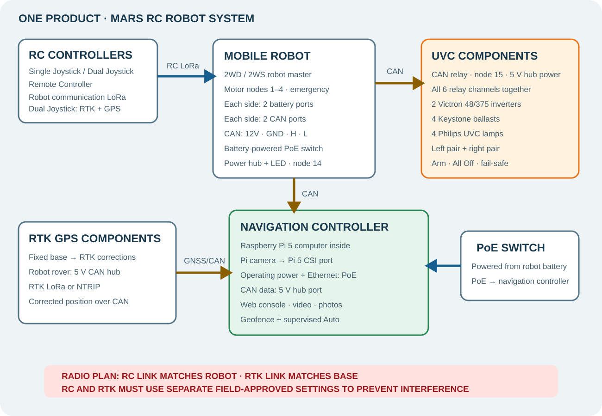
RC controllers
Handheld manual control, robot status, and Dual Joystick Remote Controller RTK-correction reception.
Mobile robot and UVC
Drive, steering, batteries, CAN relay, inverters, ballasts, and four lamps.
RTK GPS
Fixed base plus rover receiver on the robot.
Navigation controller
Raspberry Pi 5 computer, CSI-connected Pi camera, PoE power module, web console, and route planning.
Robot views
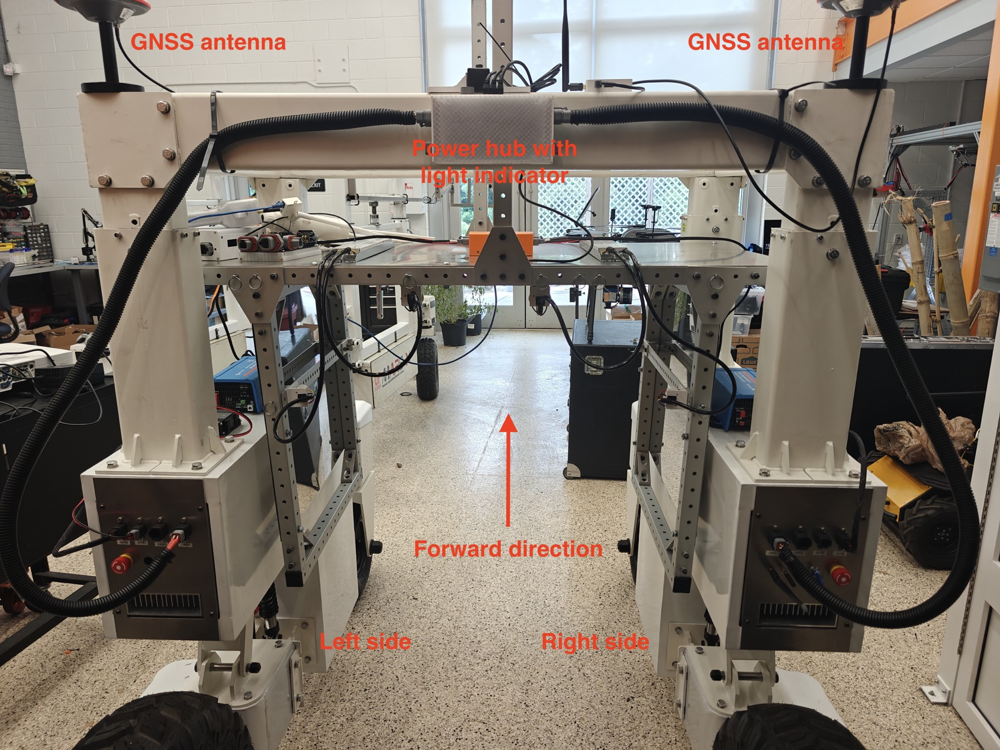
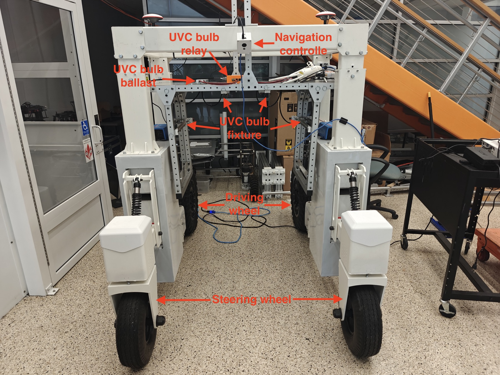
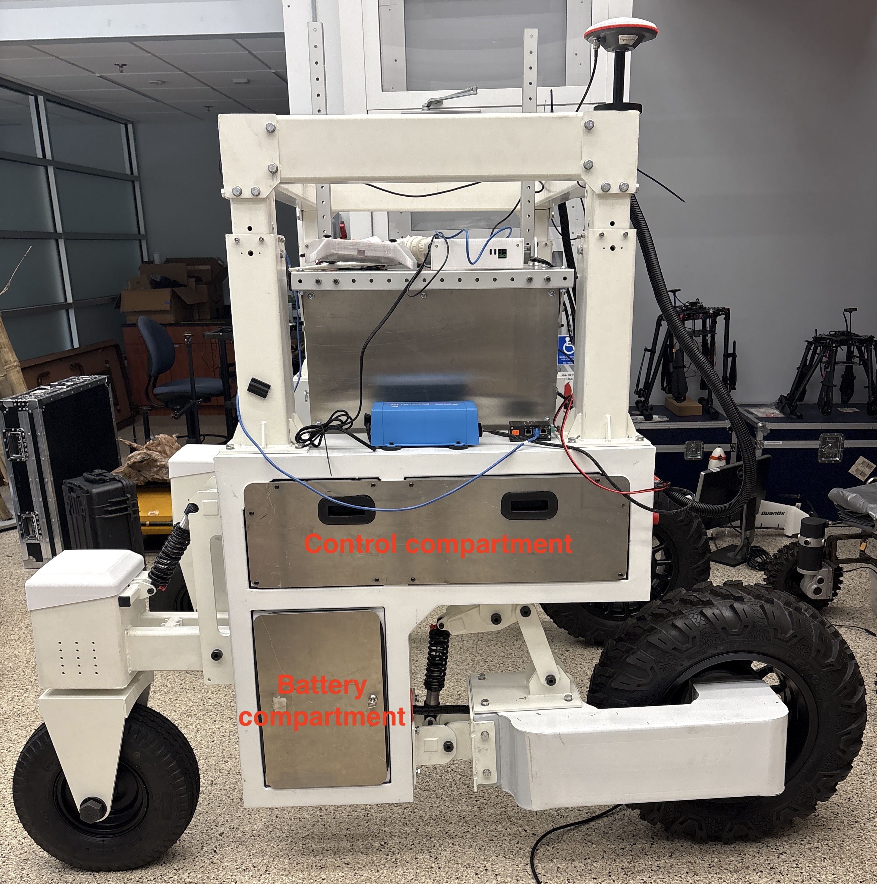
Inside the controller compartments
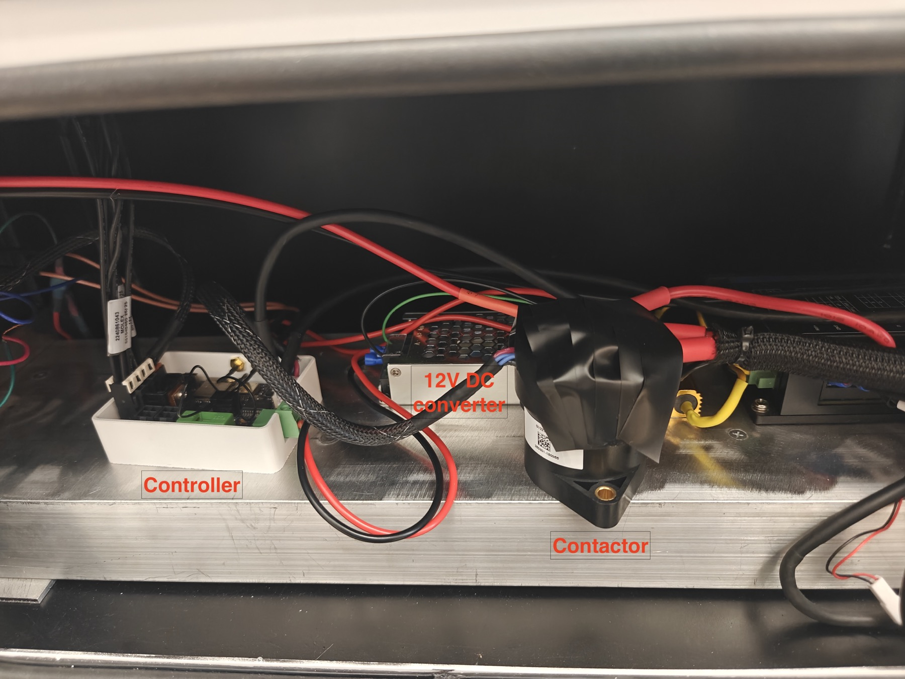
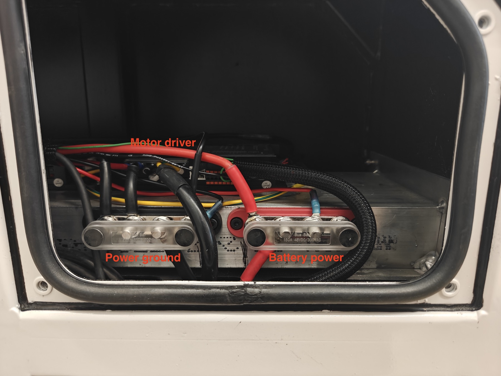
Robot system diagrams
This page is the visual index for the system. Each caption links to the detailed instructions kept with the related component.
1 · System architecture
2 · Physical power, network, radio and CAN connections
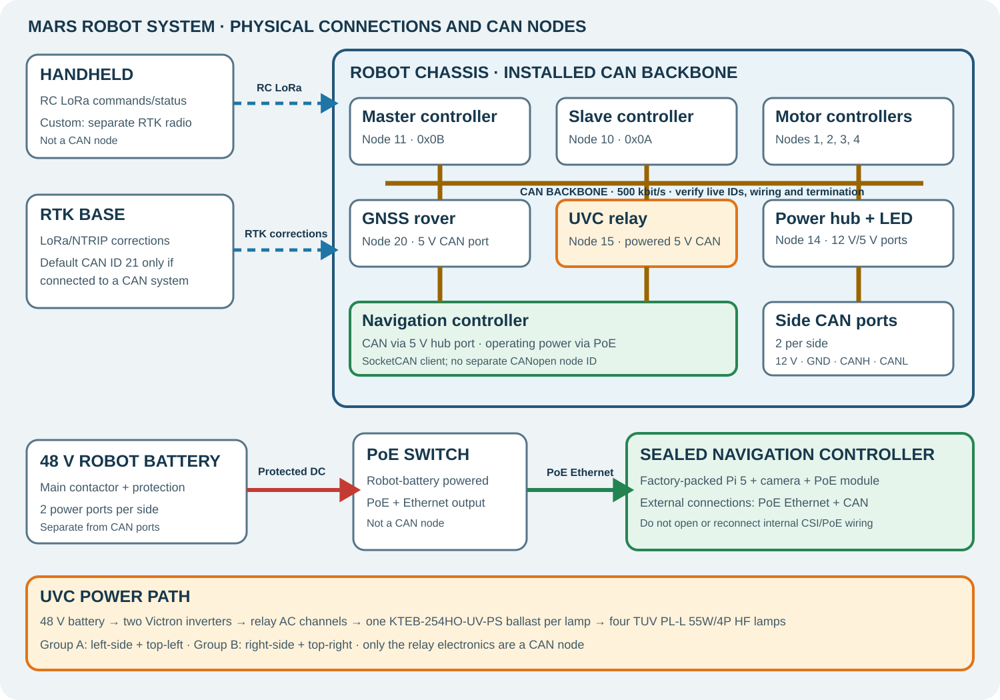
3 · Power-hub ports and device power paths
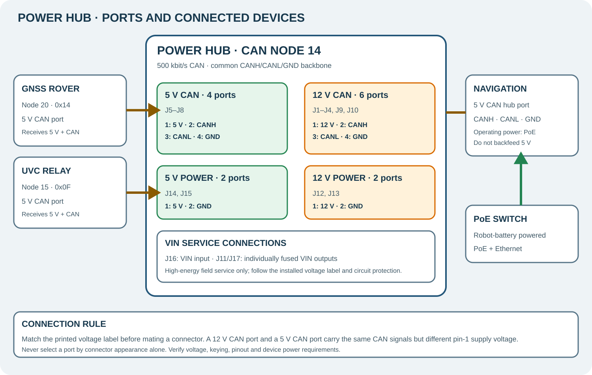
4 · CANopen topology and object ranges
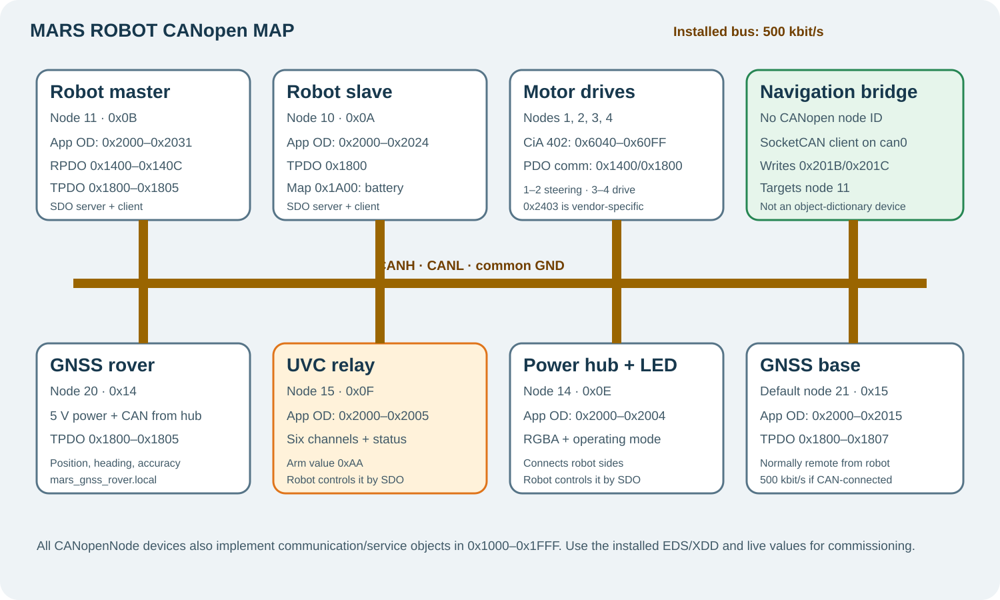
5 · Power-on state flow
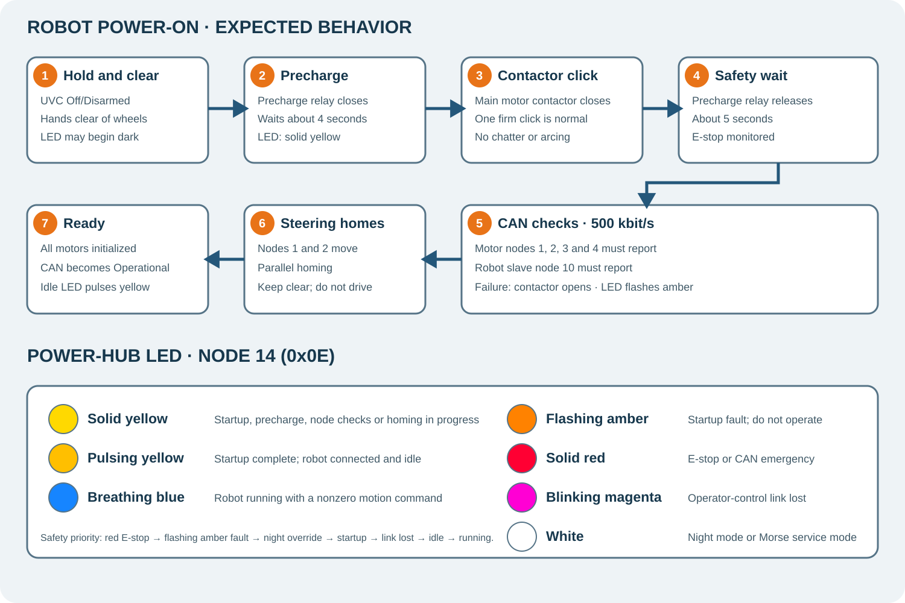
How the complete robot system is connected
This section is the connection overview for the whole product. The blue dashed paths are radios, green is Ethernet/PoE, red is switched battery power, orange is UVC AC power, and brown is CAN. A CAN node ID identifies electronics on the bus; it is not a connector number.
Physical connection schedule
| From | To | Physical link | Purpose and check |
|---|---|---|---|
| Single Joystick Remote Controller or Dual Joystick Remote Controller | Robot master receiver | RC LoRa radio | Manual commands and robot telemetry use MAVLink 2, with one complete MAVLink frame in each RC LoRa packet. The RC settings must match the robot. |
| RTK base | Robot rover; Dual Joystick Remote Controller RTK receiver when used | RTK LoRa radio | Correction data. It must match the base and must not reuse the RC LoRa settings. |
| Robot CAN backbone | Master controller, slave controller, motor nodes 1–4, GNSS rover, UVC relay, power hub/LED, and navigation CAN interface | CANH, CANL and common GND; hub ports provide labelled 12 V or 5 V | Commands, status, position, relay control, heartbeats, and faults. See the power-hub port schedule. |
| Each robot side | External CAN accessories | Two CAN ports per side: 12 V, GND, CANH, CANL | The two ports are bus connection points, not four separate CAN node IDs. Use short stubs and the approved port assignment. |
| Power-hub 5 V CAN port | GNSS rover | 5 V, CANH, CANL and GND | The rover receives both operating power and CAN communication through this connection. |
| Power-hub 5 V CAN port | UVC relay, node 15 | 5 V, CANH, CANL and GND | The relay electronics receive 5 V operating power and CAN communication through this connection. Its isolated relay contacts switch the ballast AC inputs; the 5 V supply never powers a lamp or ballast. |
| Power-hub 5 V CAN port | Navigation controller | Installed 5 V CAN-port connection: pin 1 = 5 V, pin 2 = CANH, pin 3 = CANL, pin 4 = GND | The navigation controller connects to the assigned 5 V CAN port for its robot CAN connection. Its main operating power and Ethernet connection come from the robot PoE switch. Do not modify the installed harness. |
| Robot battery through protected branch | Robot PoE switch | DC power | Powers the network switch; verify its rated input and branch protection. |
| Robot PoE switch | Navigation-controller external PoE port | PoE Ethernet cable | Provides the navigation controller's operating power and Ethernet network connection. |
| Robot battery through contactor | Two battery-power ports on each side | Switched DC | Accessory power. Verify voltage and polarity before attaching equipment. |
| 48 V battery | Two Victron inverters | Protected DC | One inverter supplies each robot side. |
| Inverters | Relay AC inputs → four ballasts → four lamps | 120 V AC | Relay node 15 switches each ballast input. One ballast serves one lamp. |
CAN node schedule
| Component | Decimal | Hex | Segment / role |
|---|---|---|---|
| Steering motor 1 | 1 | 0x01 | Steering axis; homed during startup. |
| Steering motor 2 | 2 | 0x02 | Steering axis; homed during startup. |
| Drive motor 1 | 3 | 0x03 | Velocity-controlled drive axis. |
| Drive motor 2 | 4 | 0x04 | Velocity-controlled drive axis. |
| Right/slave robot controller | 10 | 0x0A | Right/slave CAN controller. |
| Left/master robot controller | 11 | 0x0B | Robot master and target of navigation velocity/status bridge. |
| Power hub and status LED | 14 | 0x0E | Connects both robot sides and displays robot startup, running, idle, link and safety states. |
| UVC relay | 15 | 0x0F | Powered from a power-hub 5 V CAN port; controls all six relay channels. |
| Robot GNSS rover | 20 | 0x14 | Corrected position; web-configurable, firmware default shown. |
| RTK base CAN interface | 21 | 0x15 | Base firmware default; normally the field base is remote and is not physically attached to the robot CAN bus. |
| Navigation controller | No separate CANopen node ID | SocketCAN client/bridge on can0; targets robot node 11 and observes node 10. | |
| Handheld controllers, PoE switch, inverters, ballasts, lamps | Not CAN nodes | Radio, Ethernet/power, or switched AC equipment. | |
CAN cable and termination checks
- Open the contactor and isolate UVC AC power.
- Verify the connector label and pinout before mating it; never probe by wire color alone.
- Maintain the approved CAN trunk with short stubs. Keep CAN wiring separated from inverter, ballast, motor-power, and lamp wiring.
- With all CAN power Off, measure approximately 60 Ω between CANH and CANL on a correctly terminated bus. A substantially different reading requires wiring/termination inspection before energizing.
- Check common ground continuity, CANH/CANL polarity, shield/ground practice, cable strain relief, the power-hub cross-chassis connection, and the two end terminators.
- Set every attached CAN device to 500 kbit/s. Energize in Hold. Confirm motor nodes 1–4, slave node 10, master node 11, power hub node 14, relay node 15 and rover node 20 are unique and producing expected heartbeats without bus errors before enabling motion, Auto navigation, or UVC.
CANopenNode object dictionaries
This is the field-engineer reference for the objects implemented by the installed software release. The robot bus operates at 500 kbit/s. Index and subindex are hexadecimal; for example, 0x2013:02 means object 0x2013, subindex 2.
0x2000 range. Motor drives additionally use the CiA 402 drive profile. The navigation controller is a SocketCAN client/bridge and has no object dictionary or CANopen node ID.Notation and common communication objects
RO = read-only; RW = read/write; WO = write-only; TPDO = transmitted process data; RPDO = received process data. For arrays, subindex 00 is the RO element count and data begins at subindex 01.
| Index or range | CANopenNode object | Field use |
|---|---|---|
0x1000, 0x1001, 0x1003 | Device type, error register, pre-defined error field | Identify the node and diagnose active/history errors. Read before clearing faults. |
0x1005–0x1007, 0x1019 | SYNC COB-ID, cycle period, synchronous window, counter overflow | Timing configuration. Do not change on one node alone. |
0x1008–0x100A | Device name, hardware version, software version | Present in the GNSS dictionaries; use for asset/firmware records. |
0x1010, 0x1011 | Store parameters, restore defaults | Controlled service commands. Back up first; restart may be required. |
0x1012, 0x1014, 0x1015 | Time-stamp COB-ID, EMCY COB-ID, EMCY inhibit time | Emergency and time-stamp communication. |
0x1016, 0x1017 | Consumer and producer heartbeat times | Node-loss supervision. Never lengthen a safety heartbeat without revalidating the system. |
0x1018 | Identity record | Vendor ID, product code, revision and serial number where populated. |
0x1200, 0x1280 | SDO server and SDO client parameters | Configuration/diagnostic channel. Normal default SDO COB-IDs are 0x600 + node request and 0x580 + node response. |
0x1400…, 0x1600… | RPDO communication and mapping | Defines received real-time data. The robot master implements 0x1400–0x140C/0x1600–0x160C. |
0x1800…, 0x1A00… | TPDO communication and mapping | Defines transmitted real-time data. Master: six TPDOs; slave: one; rover: six; base: eight. |
Robot master node 11 and robot slave node 10
The following application objects are common to both robot-controller dictionaries unless marked otherwise. Arrays 0x2008, 0x2009, 0x200F, 0x2012, 0x2014, and 0x201F–0x2024 use subindices 01–04 for four axes/wheels.
| Index | Type / access | Name and engineering meaning |
|---|---|---|
0x2000 | uint8 RO | CAN node ID. |
0x2001 | uint8 RO | CANopenNode bit-rate index. The commissioned physical bus rate is 500 kbit/s. |
0x2002, 0x2003 | uint16 RW | Maximum linear speed and maximum turning speed. |
0x2004, 0x2005 | int16 RO · TPDO | Actual linear speed in 0.001 m/s and actual turning speed in 0.001 rad/s. |
0x2006, 0x2007 | int16 RO · RPDO | Desired linear and turning speed; scales are 0.001 m/s and 0.001 rad/s. |
0x2008:01–04 | int32 RW · TPDO | Desired motor speed/position for each of four axes. |
0x2009:01–04 | int32 RW · RPDO | Actual motor speed/position feedback. |
0x200A:01–03 | Master int32; slave float64 · RW/RPDO | Actual location: latitude, longitude, altitude. Master represents latitude/longitude as degrees × 107 and altitude as millimetres. The current slave dictionary uses float64, so never copy raw payloads between the two EDS variants. |
0x200B | float32 RW · RPDO | Actual heading. |
0x200C | uint8 RO · RPDO | Control mode: 0 Manual, 1 Hold, 2 Auto, 3 Auto Pause. |
0x200D, 0x200E | uint16 RW; control word TPDO | Robot status word and control word. |
0x200F:01–04 | int16 RW · RPDO | Actual motor torque for four axes. |
0x2011 | uint8 RO | Robot type. |
0x2012:01–04 | float32 RO · TPDO | Wheel radius for each wheel. |
0x2014:01–04 | uint16 RW · RPDO | Motor status words. |
0x2015, 0x2016 | uint16 RO · TPDO | Linear-speed and turning-speed accuracy. |
0x2017–0x201A | uint16, int16, uint8, uint16 · RO/TPDO | Battery voltage, current, capacity and temperature. |
0x201B, 0x201C | int16 RW · PDO | Automatic-navigation linear and turning commands, 0.001 m/s and 0.001 rad/s. Both must update within the firmware's 500 ms Auto watchdog. |
0x201D, 0x201E | uint16 RO | Battery design capacity and controller update rate in milliseconds. |
0x201F:01–04 | int32 RW · RPDO | Actual motor positions. |
0x2020:01–04 | float32 RO | Motor-to-wheel ratio. |
0x2021:01–04, 0x2022:01–04 | float32 RW | Wheel X and Y positions used by robot kinematics. |
0x2023:01–04 | float32 RW | Gear ratio. |
0x2024:01–04 | uint8 RW | Installed motor node IDs: 01, 02, 03, 04. Subindices 1–2 are steering motors; 3–4 are drive motors. Treat this commissioned mapping as part of the safety-controlled configuration. |
Master-only GNSS and slave-battery objects
| Index | Type / access | Meaning |
|---|---|---|
0x2025–0x2028 | uint16, int16, uint8, uint16 · RO/RPDO | Slave battery voltage, current, capacity and temperature. |
0x2029 | int32 RO · RPDO | GNSS heading. |
0x202A–0x202C | uint32 RO · RPDO | GNSS horizontal, vertical and heading accuracy. |
0x202D | uint16 RO · RPDO | GNSS fix state. |
0x202E | uint64 RO · RPDO | GNSS Unix epoch. |
0x202F | uint32 RO · RPDO | GNSS time accuracy. |
0x2030 | uint8 RO · RPDO | GNSS time-valid flags. |
0x2031 | uint8 RO | Bit mask showing which GNSS TPDO groups have been received. |
The slave's TPDO 0x1800, mapped by 0x1A00, carries 0x2017 voltage, 0x2018 current, 0x2019 capacity and 0x201A temperature.
GNSS rover node 20 and GNSS base default node 21
Rover and base firmware use the same application-object layout. The rover is on the robot at mars_gnss_rover.local. The base is normally remote and therefore not on the robot CAN trunk; if connected to a CAN test/system segment, configure it for 500 kbit/s.
| Index | Type / access | Name, units and use |
|---|---|---|
0x2000 | uint16 RW · TPDO | GNSS fix state. |
0x2001, 0x2002 | int32 RO · TPDO | Latitude and longitude, degrees × 10−7. |
0x2003, 0x2004 | int32 RO · TPDO | Height above ellipsoid and height above mean sea level, millimetres. |
0x2005–0x2008 | int16/int32 RO · TPDO | North, east and down velocity and ground speed, millimetres/second. |
0x2009 | int32 RO · TPDO | Heading of motion. Use the matching XDD/firmware scaling; the current XDD labels it radians × 10−5. |
0x200A | int16 RO · TPDO | PDOP × 0.01. |
0x200B | int32 RO · TPDO | Vehicle/dual-antenna heading, degrees × 10−5. |
0x200C, 0x200D | uint32 RO · TPDO | Horizontal and vertical accuracy, millimetres. |
0x200E | uint32 RO · TPDO | Heading accuracy; current XDD scale is radians × 10−5. |
0x200F | uint64 RO · TPDO | Unix epoch, milliseconds. |
0x2010 | uint8 RO · TPDO | GNSS time-valid flags. |
0x2011 | uint32 RO · TPDO | Time accuracy, microseconds; rover firmware stores receiver tAcc / 1000. |
0x2012 | uint8 RW | Navigation update rate. |
0x2013:01–04 | int32 RW | Antenna positions in centimetres: base X, base Y, rover X, rover Y. |
0x2014:01–02 | uint8 RW | Satellite counts for the two receiver roles. |
0x2015 | uint8 RO | Rover mode: 0 Dual GNSS, 1 Moving Baseline. Treat the base copy as reserved unless its current firmware explicitly uses it. |
GNSS TPDO payload groups
| TPDO | Rover default payload | Default period |
|---|---|---|
| 1 | Latitude + longitude | 200 ms |
| 2 | Ellipsoid height + vehicle heading | 200 ms |
| 3 | Horizontal + vertical accuracy | 200 ms |
| 4 | Heading accuracy + fix | 200 ms |
| 5 | Unix epoch | 5 s |
| 6 | Time accuracy + time-valid flags | 5 s |
The base exposes eight TPDO communication/mapping pairs (0x1800–0x1807/0x1A00–0x1A07); use its current XDD to confirm the extra base payload mapping before commissioning.
UVC relay node 15
| Index | Type / access | Meaning |
|---|---|---|
0x2000 | uint8 RO | Node ID. |
0x2001:01–03 | boolean RW | Relay Group 1 commands: physical channels 1–3. |
0x2002:01–03 | boolean RW | Relay Group 2 commands: physical channels 4–6. |
0x2003 | uint8 RO | Applied relay status bit mask; bit 0 is channel 1 through bit 5 channel 6. |
0x2004 | uint8 WO | All Off command. Any nonzero write drops all six channels, then self-resets. |
0x2005 | uint8 RW | Arm interlock: 0xAA = armed; any other value = disarmed. |
0x0F by SDO. It arms explicitly, commands all six channels together for UVC, reads applied status, and relies on heartbeat/emergency fail-safe behavior. Never bypass the warning confirmation or any installed UVC safety device with an engineering write.Power-hub and status-LED node 14
To keep all information for this component together, see the power-hub component manual. Its full CANopen table is at Power-hub CANopenNode objects; LED meanings are at Power-hub LED indications.
Installed motor drives: objects used by robot firmware
The installed CANopen motor IDs are 1 and 2 for steering and 3 and 4 for driving; the same ordered values are stored at robot OD 0x2024:01–04. The table lists only objects the current master/slave firmware actually accesses. The motor manufacturer's matching EDS and drive manual remain authoritative for the full dictionary, data scaling and limits.
| Index | CiA 402 / vendor function | Current firmware use |
|---|---|---|
0x1000:00 | Device type | Presence/identity read. |
0x1400:01, 0x1800:01 | PDO COB-IDs | Configures the command RPDO and feedback TPDO identifiers. |
0x6040:00, 0x6041:00 | Controlword, statusword | Fault reset, shutdown, switch-on, enable, quick stop and homing-state checks. |
0x6060:00 | Modes of operation | 1 position, 3 velocity, 4 torque; homing mode is selected during steering homing. |
0x6071:00, 0x6087:00 | Target torque, torque slope | Torque-mode setup. |
0x607A:00, 0x6081:00 | Target position, profile velocity | Steering position command and profile speed. |
0x6080:00, 0x6083:00, 0x6084:00 | Maximum speed, acceleration, deceleration | Drive/steering motion limits. |
0x60FF:00 | Target velocity | Drive-wheel command and explicit zero-speed stop. |
0x607C:00, 0x6098:00 | Home offset, homing method | Steering homing configuration. |
0x6099:01–02, 0x609A:00 | Homing seek/zero speeds and acceleration | Steering homing profile. |
0x2403:00 | Vendor-specific digital-input configuration | Configures the homing input. Do not interpret or change it without the exact drive vendor manual. |
Commissioning record
- Record the firmware folder/version, EDS or XDD revision, physical connector, node ID and 500 kbit/s setting for every installed device.
- With power isolated, confirm two end terminators and approximately 60 Ω between CANH and CANL.
- Power in Hold with UVC AC physically disconnected. Confirm NMT state, heartbeat, EMCY state and SDO identity for each node.
- Read
0x2024:01–04and confirm the ordered values are1, 2, 3, 4: steering, steering, drive, drive. Confirm each physical axis label before motion. - Compare live PDO communication/mapping objects with the approved EDS/XDD. Do not remap a live system ad hoc.
- Test read-only feedback first. Then validate controlled writes with wheels restrained and record the result and restored values.
Robot-mounted UVC lights: PPE and access warning
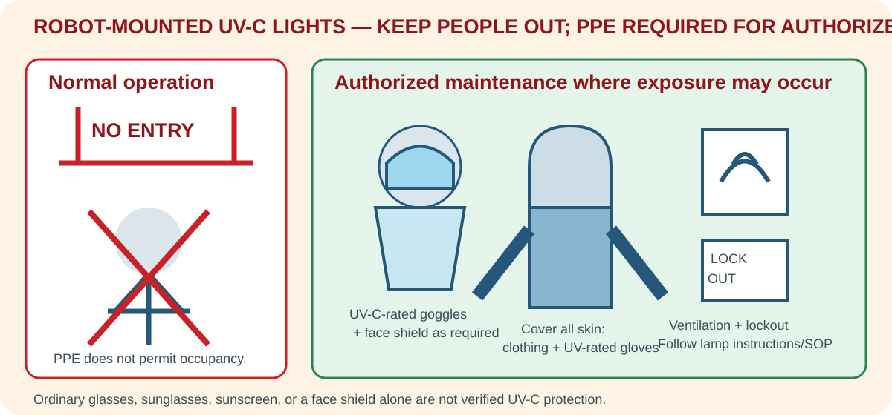
Minimum PPE decision
| Situation | Required protection |
|---|---|
| Normal lamp operation | No personnel or animals in the established treatment/exclusion zone. Use signs, cones, flagging, gates or a spotter as the site assessment requires; confirm warning indicators and remote supervision. |
| Inspection after verified All Off, Disarm, and physical disconnect | Normal mechanical/electrical task PPE plus lockout/tagout according to site procedure. |
| Authorized energized diagnostic where UV exposure is possible | Only under a written task-specific risk assessment: UV-C-rated goggles with side protection selected for the lamp wavelength; compatible face shield when specified; clothing that fully covers skin; UV-resistant gloves; closed footwear; controlled access and minimum exposure time/distance. |
| Lamp may generate ozone | Follow the lamp manufacturer's ozone instructions and the site exposure assessment. Do not assume outdoor air movement is sufficient in still air, dense crop canopies, sheds or other partially confined locations. |
Before anyone approaches the UVC robot
- Command All Off and verify Relay Groups A and B and all four physical lamps are Off.
- Command Disarm and verify Disarmed.
- Verify the external UVC indicator is Off.
- Operate the physical UVC disconnect and apply the site lockout/tagout procedure.
- Wait the manufacturer/site-required time, including ventilation time specified for the installed fixture.
- Only then enter while wearing the task-required mechanical/electrical PPE.
Possible exposure
Leave the area, shut down from a safe location, and follow the site medical/emergency procedure. UV-C can injure skin and eyes after a short exposure. Eye pain, tearing, a gritty “sand” sensation, light sensitivity, or skin redness/burning requires prompt medical evaluation. Do not return the robot to service until the event is investigated.
Safety basis: FDA ultraviolet radiation guidance and CDC/NIOSH eye-protection guidance. The installed lamp manufacturer’s instructions and the site hazard assessment control the exact PPE selection.
RC controllers: component overview
Use one handheld controller at a time. Both models send robot commands and receive robot status as MAVLink 2 messages carried by the RC LoRa link. Single Joystick Remote Controller is the compact version; Dual Joystick Remote Controller adds two joysticks, a larger screen, voice alerts, a separate RTK radio, local GNSS, and UVC controls.
Features
| Feature | Single Joystick Remote Controller | Dual Joystick Remote Controller |
|---|---|---|
| Display | 128 × 64 OLED | 400 × 300 RLCD |
| Controls | One joystick, Buttons 1–3, joystick Select | J1/J2 and SW1–SW10 |
| Robot link | One RC LoRa radio | One RC LoRa radio |
| RTK link | None | Separate RTK LoRa receiver |
| UVC controls | Not provided | Arm, On/Off, and confirmation warning |
| Audio | No | Voice warnings and adjustable volume |
| Setup | OLED menus and Wi-Fi webpage | RLCD menus and Wi-Fi webpage |
Controller specifications
| Item | Single Joystick Remote Controller | Dual Joystick Remote Controller |
|---|---|---|
| Wi-Fi name | mars_rc_XXXXXX | RC-Controller |
| Wi-Fi password | alphaagtech | alphaagtech |
| Web address | http://mars_rc.local | http://rc-controller.local |
| Fallback address | 192.168.10.1 | 192.168.4.1 |
| Application protocol | MAVLink 2; one complete unsigned frame per RC LoRa packet | |
| Addressing | Controller system 255 / MAV_COMP_ID_MISSIONPLANNER; robot system 1 / MAV_COMP_ID_AUTOPILOT1 | |
| Default RC radio | 915 MHz, 500 kHz bandwidth, SF7, coding rate 4/6, private sync word, 8-symbol preamble and 22 dBm | |
| Radio choices | 903–927 MHz in 2 MHz steps; 125/250/500 kHz; SF7–SF12 | |
| Dual Joystick Remote Controller RTK radio | Not provided | Matches the RTK base and must use field-approved settings that do not overlap the RC link |
| Dual Joystick Remote Controller antennas | One robot-communication LoRa antenna | Left: RTK LoRa; middle: GNSS; right: robot-communication LoRa |
| Default low limits | 0.5 m/s linear; 0.5 rad/s turning | |
| Default high limits | 1.5 m/s linear; 1.5 rad/s turning | |
| Startup mode | Hold | |
XXXXXX is a unique part of the device identity, so the exact Wi-Fi name varies. The listed AP password is the general robot-device default; the navigation-controller AP has the specific exception documented in its technician-access section. The listed RC radio default is not an instruction to configure RTK the same way.
RC controller MAVLink communication
MAVLink 2 is the message format used between either remote controller and the robot controller. The controller creates a MAVLink frame, places that complete frame inside one SX1262 RC LoRa packet, transmits it, and briefly listens for one robot reply. MAVLink is therefore the application protocol carried by the RC LoRa radio; it is not another radio and it is not the robot’s CANopen bus.
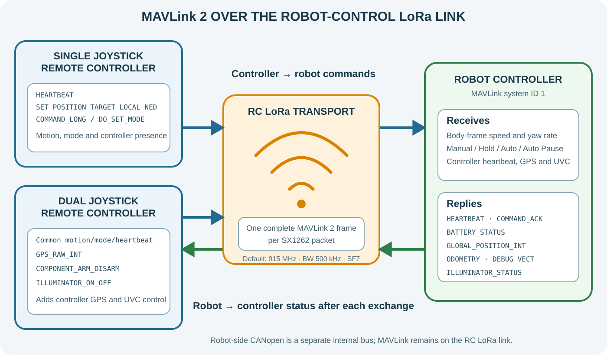
Protocol and addressing
| Item | Installed behavior |
|---|---|
| Protocol | MAVLink 2 over the robot-control SX1262 LoRa link |
| Packet rule | One complete MAVLink 2 frame per LoRa packet; maximum radio payload 255 bytes |
| Remote-controller source | System ID 255; component MAV_COMP_ID_MISSIONPLANNER; heartbeat type MAV_TYPE_GCS |
| Robot target/source | System ID 1; component MAV_COMP_ID_AUTOPILOT1 |
| UVC target | Robot system ID 1; component MAV_COMP_ID_USER1; used by the Dual Joystick Remote Controller |
| Frame security | Current frames are unsigned. MAVLink signing, encryption and peer authentication are not provided by this radio profile. |
| Protocol separation | RC LoRa carries MAVLink. RTK LoRa carries correction data. The robot’s wired 500 kbit/s CAN network uses CANopen. Do not mix their settings or troubleshooting paths. |
Controller-to-robot messages
| MAVLink message/command | Purpose and fields used | Controller models |
|---|---|---|
SET_POSITION_TARGET_LOCAL_NED | Uses MAV_FRAME_BODY_NED. Only forward velocity vx in m/s and yaw rate in rad/s are enabled; position, other velocity/acceleration axes and yaw angle are ignored. | Both |
COMMAND_LONG with MAV_CMD_DO_SET_MODE | Requests the custom robot mode: Manual = 0, Hold = 1, Auto = 2, Auto Pause = 3. The custom-mode-enabled flag is set. | Both |
HEARTBEAT | Identifies an active ground-control-station controller and maintains controller presence. | Both |
GPS_RAW_INT | Sends controller latitude/longitude, MSL and ellipsoid altitude, fix class, satellites and available accuracy data only when the onboard GPS fix is valid and no older than 1.5 seconds. | Dual Joystick Remote Controller |
MAV_CMD_COMPONENT_ARM_DISARM | Arms or disarms the UVC component; Disarm also forces the requested UVC output Off in the controller. | Dual Joystick Remote Controller |
MAV_CMD_ILLUMINATOR_ON_OFF | Requests all installed UVC relay channels On or Off after the controller’s UVC safety-confirmation workflow. | Dual Joystick Remote Controller |
Robot-to-controller messages
| MAVLink message | Controller use |
|---|---|
HEARTBEAT | Confirms robot system/component, active mode and emergency state. A matching mode can complete a pending mode request. |
COMMAND_ACK | Reports whether a mode or UVC command was accepted, rejected, unsupported, failed or temporarily rejected. Temporarily rejected commands remain pending for retry. |
BATTERY_STATUS | Updates installed robot battery state of charge by battery ID; invalid or absent values are not presented as valid capacity. |
GLOBAL_POSITION_INT | Updates robot latitude, longitude, altitude, heading-derived forward speed and GPS-valid indication. |
ODOMETRY | Updates actual forward velocity and yaw rate. |
DEBUG_VECT named ROVER_VEL | Compatibility telemetry for actual linear and turning velocity. |
ILLUMINATOR_STATUS | Updates applied UVC output and clears a matching pending UVC On/Off request on the Dual Joystick Remote Controller. |
UVC-component HEARTBEAT | Updates the UVC armed state on the Dual Joystick Remote Controller. |
Timing and acknowledgement behavior
| Behavior | Single Joystick Remote Controller | Dual Joystick Remote Controller |
|---|---|---|
| Radio exchange cycle | 10 Hz (approximately every 100 ms) | 10 Hz (approximately every 100 ms) |
| Reply window after transmit | Up to 80 ms | Up to 60 ms |
| Command retry interval | 300 ms for a pending mode command | 300 ms for pending mode or UVC commands |
| Controller status schedule | Heartbeat every 1 second | One GPS/heartbeat status slot every 1 second; heartbeat at least every 5 seconds |
| Robot-link timeout | Link Lost after approximately 1 second without a valid robot reply | Link Lost after approximately 1 second without a valid robot reply |
Field-engineer checks
- Keep the robot restrained in Hold with UVC electrically isolated before protocol testing.
- Verify both RC endpoints use the same approved LoRa frequency, bandwidth, spreading factor, coding rate, sync word and preamble. Keep RTK LoRa on its separately approved settings.
- Capture the controller serial log. Confirm transmitted MAVLink 2 frames begin with the MAVLink 2 start byte
0xFD, fit in one 255-byte LoRa payload, and parse without CRC errors. - Verify controller source system ID 255 and robot source/target system ID 1. Confirm robot and UVC component IDs match the installed firmware.
- For motion, verify body-frame
vxand yaw-rate units are m/s and rad/s. A 1000-times scaling error indicates confusion with the internal mm/s or mrad/s values. - For a mode or UVC problem, inspect the outgoing
COMMAND_LONG, the returnedCOMMAND_ACKresult, and subsequent matchingHEARTBEATorILLUMINATOR_STATUS. - For Dual Joystick Remote Controller GPS, require a valid fix newer than 1.5 seconds. No
GPS_RAW_INTis expected for an invalid or stale fix. - After service, test Hold, low-speed motion, every mode transition, link-loss timeout, emergency indication, both battery reports, robot position, and—on the Dual Joystick Remote Controller—GPS and UVC acknowledgements.
Single Joystick Remote Controller operation manual
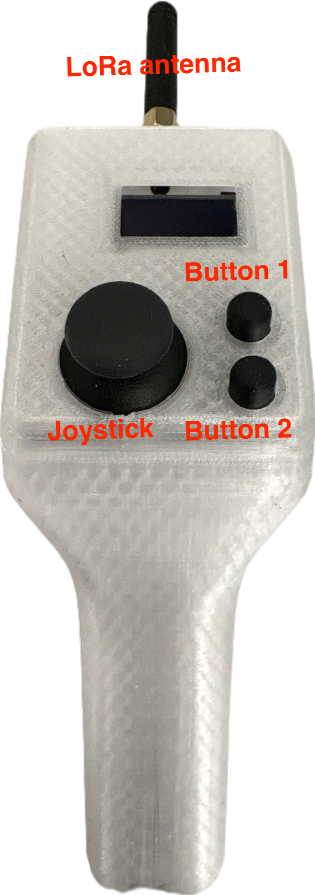
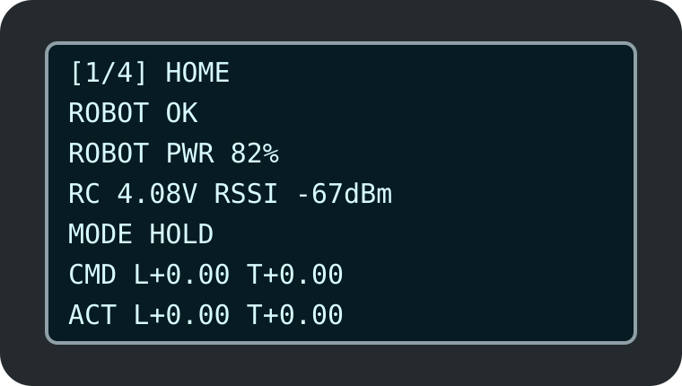
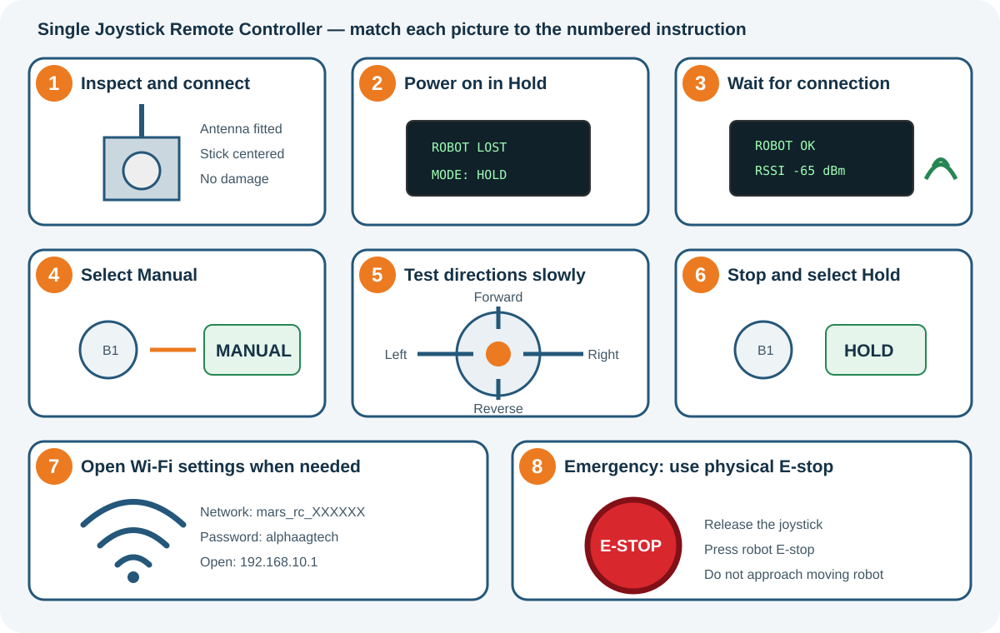
- Inspect and connect. Check the case, joystick, buttons, battery, and antenna socket. Fit the LoRa antenna and let the joystick rest in the center.
- Power on. Keep the robot restrained. Switch on the handheld. Confirm the OLED says Hold; Robot Lost is normal until the robot starts.
- Wait for the robot. Switch on the robot. Do not continue until the OLED says Robot OK, RSSI is visible, and telemetry changes.
- Select Manual. Short-press Button 1. Confirm the display changes to Manual. A button press is only a request; the displayed robot mode is the confirmation.
- Test direction. Move the joystick slightly forward, reverse, left, and right. Stop immediately if the robot moves in the wrong direction.
- Stop. Release the joystick and short-press Button 1 for Hold. Confirm CMD is zero and wheels stop.
- Use setup webpage when required. Join
mars_rc_XXXXXX, enteralphaagtech, and open192.168.10.1. Change speed/radio settings only while the robot is in Hold. - Emergency. Release the joystick and use the robot’s physical emergency stop. Do not approach until the robot is confirmed stationary.
Buttons and screens
| Control | Result |
|---|---|
| Button 1 short | Manual/Hold; changing from Auto to Manual or Hold automatically stops active autonomous navigation |
| Button 1 long | Sleep; Button 1 wakes |
| Button 2 short | Auto/Auto Pause; during an active mission, selecting Auto Pause pauses autonomous navigation while retaining the mission for Resume; also confirms calibration when prompted |
| Button 2 held | Enter Auto |
| Button 3 held | High speed while held |
| Joystick Select | Home → Telemetry → Settings → Calibration |
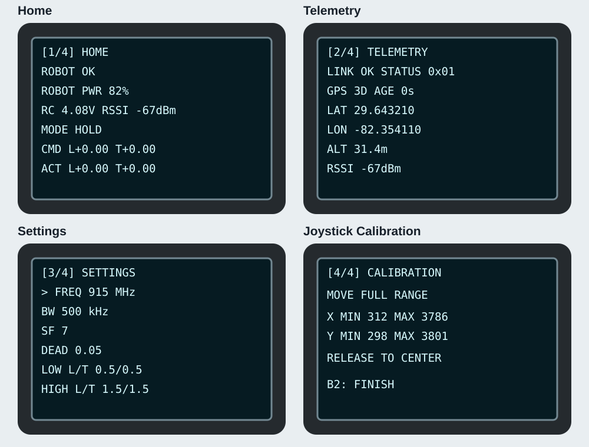
Joystick calibration
- Restrain the robot and open Calibration with Select; Hold is forced.
- Let the stick center and short-press Button 2.
- Move slowly to every endpoint and circle the outside edge several times.
- Release to natural center and press Button 2 again.
- Do not touch the stick during center sampling. Wait for Success and verify zero CMD at center.
Wi-Fi settings
- Join the Single Joystick Remote Controller network and remain connected when the phone reports No Internet.
- Open the local address. Review battery, GPS, RSSI, and telemetry age.
- Set slow/high speed values, save, reload, and test while restrained.
- Record old LoRa values before changing them. Set the robot to the identical frequency, bandwidth, and SF.
Dual Joystick Remote Controller operation manual
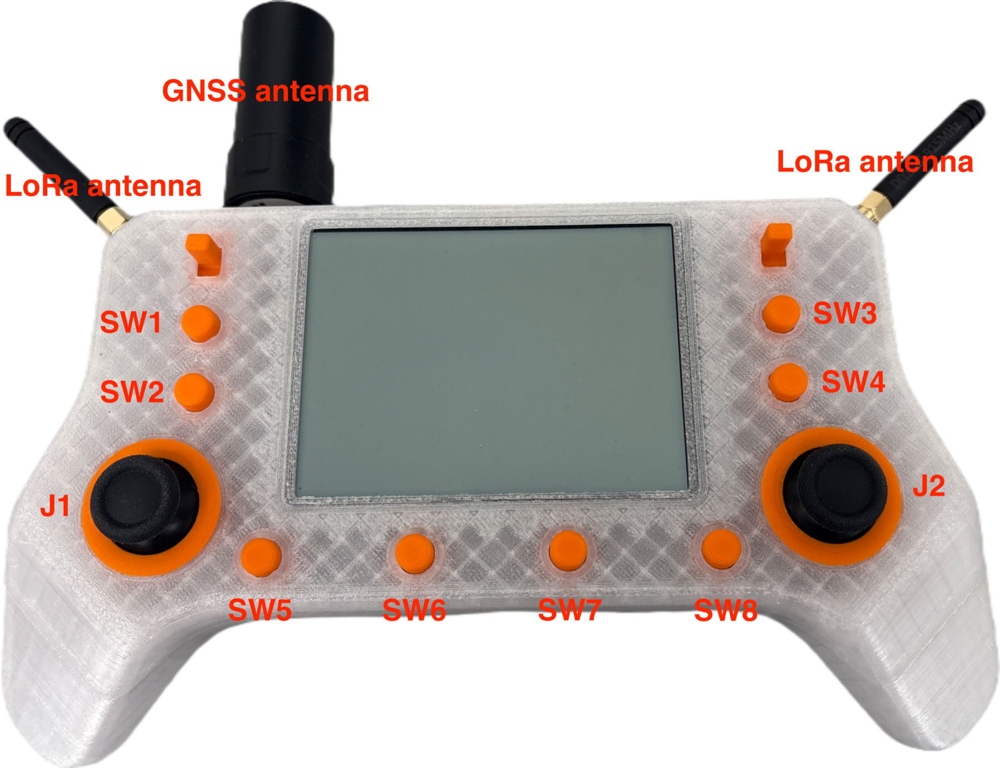
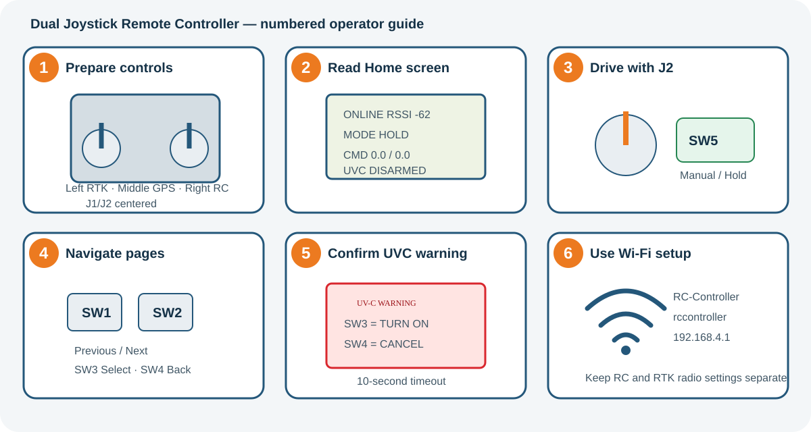
- Prepare. Inspect the unit. Facing the controller, fit the RTK LoRa antenna on the left, GNSS antenna in the middle, and robot-communication LoRa antenna on the right. Center J1/J2 and make sure no switch is held.
- Read Home. Power on and verify Hold, zero CMD, UVC Disarmed, controller battery, robot Online, and fresh RSSI/telemetry.
- Drive. Press SW5 for Manual and use J2 by default. Test at low speed; SW9 gives high speed only while held.
- Use pages. SW1/SW2 move through pages or menu items, SW3 selects/saves, and SW4 goes back/cancels.
- UVC warning. After arming, an On request opens the warning. Check the secured area; SW3 confirms, SW4 cancels, and 10 seconds without action cancels.
- Use Wi-Fi. Join
RC-Controllerwithalphaagtech, open192.168.4.1, and configure the RC and RTK radios separately. Never copy the RC settings into the RTK radio; each radio matches its own endpoint and the two links must use non-overlapping field-approved settings.
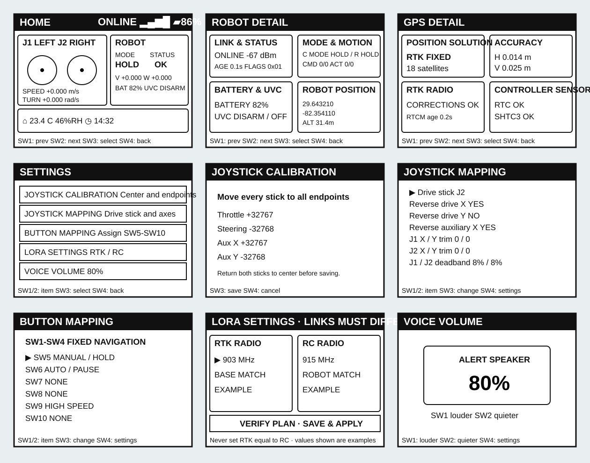
Calibration and mapping
- Restrain the robot and open Settings → Joystick Calibration.
- Move J1/J2 through every endpoint while watching all four displayed axes.
- Release both sticks; SW3 saves or SW4 cancels.
- In Joystick Mapping choose J1 or J2 for driving, reverse axes if necessary, and use the smallest trim/deadband that produces stable zero.
- In Button Mapping assign SW5–SW10. Each function may be used once; SW1–SW4 are fixed.
Radio, clock, voice, and firmware webpage
- RC radio: must match the robot’s communication radio.
- RTK radio: must match the RTK correction base and must not use the same channel/settings as RC. Separate the links according to the approved radio plan to prevent LoRa interference.
- Applied: saved radio settings are active. Pending means wait. Failed means restore known-good values.
- Clock: verify the phone time zone, then Sync Browser Time.
- Voice: 0% mutes alerts; higher values change in 10% steps.
- Firmware: select only the custom ESP32-S3 application image. Username is
admin; password isrccontroller. Verify all functions after reboot.
Controller troubleshooting
| Problem | What it means | What to do |
|---|---|---|
| Robot Lost / Offline | No valid MAVLink reply from robot system ID 1 for approximately one second. | Select Hold; verify robot power and antennas; move closer; match RC LoRa settings; then inspect MAVLink version, source ID and parse/CRC errors. |
| Good RSSI but no valid telemetry | RF packets are present but MAVLink frames have the wrong version/ID, fail parsing, or contain unsupported messages. | Keep Hold. Confirm MAVLink 2, controller system 255, robot system 1, component IDs, one frame per packet and matching firmware. |
| Mode request repeats | No accepted COMMAND_ACK or matching robot heartbeat has completed the request. | Read the ACK result; verify MAV_CMD_DO_SET_MODE, target component and custom-mode value; correct the rejection before retrying. |
| Dual Joystick Remote Controller GPS is not sent | The onboard GPS fix is invalid or older than 1.5 seconds. | Improve sky view/corrections and verify fresh GPS status; stale fixes are intentionally not transmitted. |
| Robot creeps at center | Joystick zero is incorrect. | Check free return to center; recalibrate; increase deadband slightly; use only small trim. |
| Direction is reversed | Axis mapping or wiring does not agree. | Stop; select Hold; correct Dual Joystick Remote Controller axis reversal or service Single Joystick Remote Controller/robot mapping; retest restrained. |
| Webpage will not open | Phone left the local network or hostname failed. | Stay connected despite No Internet; disable mobile-data switching/VPN; use the numeric address. |
| Dual Joystick Remote Controller UVC On ignored | Not armed, warning canceled/timed out, or no robot acknowledgment. | Verify UVC Armed, robot link, relay status, then repeat deliberate confirmation. |
| Emergency overlay remains | Last robot heartbeat reported emergency. | Make the robot safe and reset the physical system; wait for a new non-emergency heartbeat. |
Mobile robot and UVC: component overview
The robot uses two driven wheels and two steering axes. Robot master node 0x0B and slave node 0x0A coordinate motor nodes 1 and 2 for steering and motor nodes 3 and 4 for driving. The installed power hub connects the two robot sides and provides the CAN-controlled status LED at node 0x0E. The master receives handheld or navigation commands, reads system status/GPS, and controls relay node 0x0F. The UVC system has four Philips lamps on left and right physical AC power branches.
Features
- 2WD propulsion and 2WS steering.
- Four installed CANopen motor nodes: steering 1–2 and drive 3–4.
- Automatic precharge, motor-contactor control, steering homing and startup fault detection.
- Power hub joining the two robot sides, with RGBA LED indications for startup, idle, running, link loss and safety states.
- Hold, Manual, Auto, and Auto Pause modes.
- LoRa handheld control and telemetry.
- 500 kbit/s CAN connection to motor controllers, robot master/slave, GPS rover, navigation interface, power hub, and UVC relay.
- Robot Wi-Fi dashboard and configuration webpage.
- Four external ports on each robot side: two contactor-switched battery-power ports and two CAN-bus ports.
- Battery-powered PoE switch supplying the navigation controller network/power path.
- Four robot-mounted UVC lamps: left side, right side, top-left, and top-right.
- Routine UVC control commands all six relay channels together, with Arm, All Off, Disarm, heartbeat fail-safe, and CAN emergency shutdown.
Robot and UVC specifications
Installed component list
| Component | Installed model or rating | Manufacturer / notes |
|---|---|---|
| Motor | ELVM80100V48FH-M17-HD | Leadshine |
| Motor driver | ELD2-CAN7030B | Leadshine |
| Steering-wheel gearbox | FAD-110D-50-P2-19-70-90-M6-42 | OC Drive Machinery Co. |
| Drive-wheel gearbox | FAD-110D-70-P2-19-70-90-M6-42 | OC Drive Machinery Co. |
| Battery pack | 48 V, 80 Ah | Two packs installed, one on each robot side |
| Inverter | Victron Inverter 48/375 VE | Victron; two installed, one per robot side |
| UVC ballast | KTEB-254HO-UV-PS | One ballast per installed UVC bulb |
| UVC bulb | TUV PL-L 55W/4P/HF | Philips; four installed |
System specifications
| Item | Specification |
|---|---|
| Controller firmware | 1.0.1 |
| Motion | Two drive axes and two steering axes |
| Motor nodes | 1–2 steering; 3–4 drive |
| CAN bus | 500 kbit/s |
| Startup timing | Approximately 4 s precharge, main-contactor closure, 0.5 s precharge overlap, then 5 s safety wait before CAN/node checks |
| Power hub | Cross-chassis connection between robot sides; CAN node 14 (0x0E); RGBA status LED |
| Robot Wi-Fi | mars_h_XXXXXX; local dashboard |
| Relay | CAN node decimal 15 (0x0F); electronics powered by 5 V from a power-hub 5 V CAN port; 500 kbit/s CANH/CANL |
| Relay groups | Group A: left-side + top-left; Group B: right-side + top-right; all six channels are commanded together by robot firmware |
| Relay Wi-Fi | can_relay_XXXXXX; 192.168.10.1 |
| Fail-safe | All six channels Off/Disarm on CAN emergency or missing robot-master heartbeat |
| Heartbeat timeout | Approximately 3 seconds at relay |
Robot connections and side ports
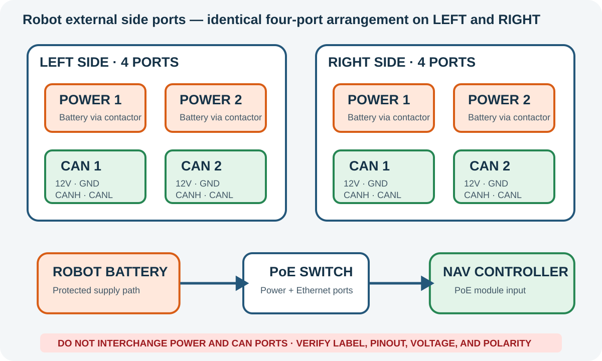
| Connection | Purpose | Operator/engineer check |
|---|---|---|
| RC LoRa antenna | Handheld commands and telemetry | Tight, undamaged, RC settings match only the controller |
| Battery power ports—2 per side | Contactor-switched robot battery supply for approved loads | Correct voltage/polarity, connector label, fuse/protection, contactor Off before mating |
| CAN-bus ports—2 per side | Combined auxiliary power and CAN communications | Pinout is 12 V, GND, CANH, CANL; never confuse with battery-power port |
| Power hub + LED, node 14 | Cross-chassis connection joining the two robot sides and displaying system status | Hub secure; inter-side connections tight; LED visible; CAN heartbeat and SDO response present |
| PoE switch | Network connection and PoE supply for the navigation controller | Powered from robot battery power through the installed protected supply path; link and PoE indicators normal |
| Drive motors, nodes 3–4 | Forward and reverse | Correct direction and feedback |
| Steering motors, nodes 1–2 | Wheel angle | Homed, no fault, correct actual angle |
| Relay Group A | Left-side and top-left lamps | Two correct physical labels and matching applied feedback |
| Relay Group B | Right-side and top-right lamps | Two correct physical labels and matching applied feedback |
| Emergency stop | Independent safe stop | Accessible and tested before operation |
Side-port connection procedure
- Select Hold, switch UVC Off/Disarm, open the main contactor, and follow the site lockout procedure.
- Read the port label. Identify BATTERY POWER or CAN BUS; do not choose by connector appearance alone.
- Inspect pins, seals, keying, strain relief, cable rating, and damage. Do not connect a wet, bent, or unlabeled plug.
- For a CAN port, verify the cable pinout end-to-end: 12 V, GND, CANH, CANL. Check bus termination and avoid adding an unintended terminator.
- For a battery port, verify the approved load, operating voltage, polarity, branch protection, and current rating before mating.
- Mate without forcing, secure the connector, route the cable away from steering/wheels/UVC fixtures, then restore power.
- Confirm the intended device only: supply voltage, CAN online state, or PoE/link indication. Stop and isolate immediately for heat, odor, arcing, wrong voltage, or CAN faults.
Battery compartments and charging
The robot has two separate battery packs: one in the locked compartment on the left side and one in the locked compartment on the right side. Open one compartment, support and move its battery out far enough to reach the battery charge port, charge it with the approved charger, then return and secure it before repeating the procedure on the other side.
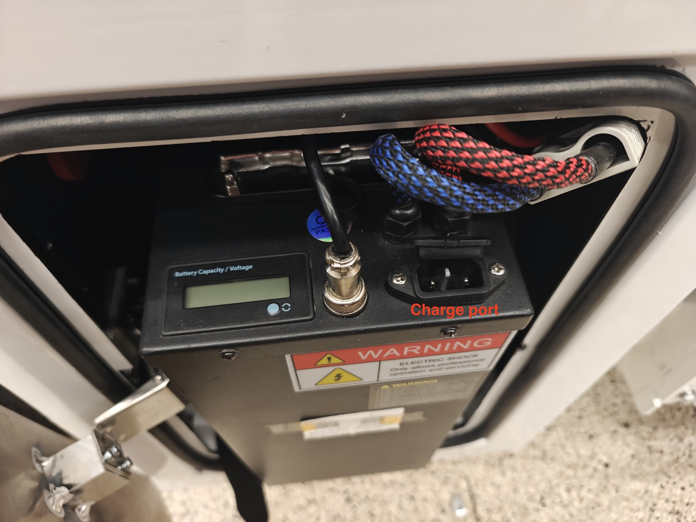
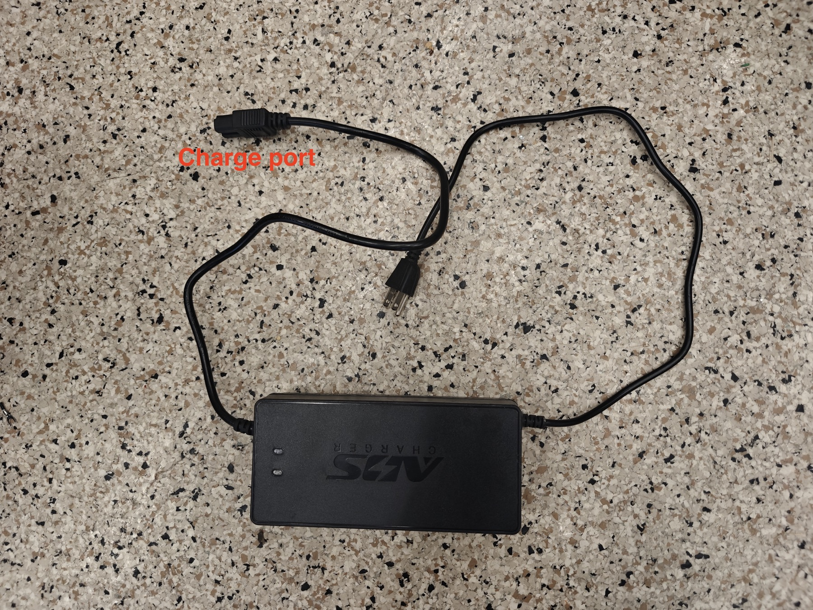
Prepare the robot and battery
- Park the robot on stable, dry ground in the designated charging area with ventilation and unobstructed emergency access.
- Stop any mission, center the joystick, select Hold, and verify zero motion. Command UVC All Off, verify all four lamps Off, Disarm, and open the physical UVC disconnect.
- Switch the robot off using the approved shutdown procedure. Do not begin while the contactor is closed or the robot is capable of motion.
- Identify the battery side to charge. Confirm the compartment key and the charger approved for that exact battery pack. Charge one battery at a time unless the approved equipment and site procedure explicitly allow otherwise.
- Unlock and open the selected battery compartment. Support the cover, disconnect or release the battery only as specified by its manual, and carefully slide or lift the battery out far enough to access the charge port. Support its weight; do not pull on cables or allow the battery to fall.
- Inspect the battery housing, display, cables, terminals, charge port, protective cover, QR label, and charger. Stop and tag the equipment for service if anything is loose, wet, contaminated, cracked, corroded, swollen, leaking, burnt, or unusually hot.
Connect and charge
- Keep the charger disconnected from AC power while making the battery-side connection unless the charger’s own instructions require a different sequence.
- Identify the charger’s battery-output connector and connect it to the battery charge port without forcing it. Do not connect the wall-outlet AC plug or any direct AC source to the battery.
- Check that the connector is fully seated and the cable is protected from the compartment edge, wheels, steering, and foot traffic. Then connect the charger’s AC input plug to a correctly rated wall outlet and energize it according to the charger instructions.
- Confirm normal charging on the charger and battery indicators. Monitor the battery and charger for faults, unusual heat, odor, smoke, noise, swelling, leakage, or cable damage. Stop and follow the battery emergency procedure for any abnormal condition.
Finish and secure
- When charging is complete, switch off or unplug the charger from AC power before disconnecting its battery-output connector, unless the charger manual specifies another order. Never pull on the cable.
- Inspect the charge port and refit its protective cover. Carefully return the battery fully into its compartment, reconnect and secure it according to the battery manual, and confirm no cable is pinched or strained.
- Close and lock the compartment. Verify it is latched, then repeat the complete procedure for the battery on the other side.
- Before returning the robot to service, confirm both batteries are secured, both compartment locks are closed, no charger remains attached, both battery states are acceptable, and the robot passes the normal power-on sequence.
Battery Bluetooth app and manual
Each battery has built-in Bluetooth communication. Scan the QR code printed on that battery to obtain the manufacturer’s app and battery manual. Before installing, verify that the QR destination and app publisher match the battery manufacturer. Follow the battery manual for pairing, status interpretation, alarms, and maintenance. Bluetooth/app readings supplement—but do not replace—the battery display, charger indicators, physical inspection, or charging safety checks.
Charging troubleshooting
| Symptom | Action |
|---|---|
| Charger does not start | De-energize it. Verify the approved charger, correctly rated AC input, seated battery-output connector, battery charge port, and charger indication. Never test the battery port with direct AC. |
| Charger reports a fault | Stop charging, record the code/indicator, isolate the charger, and follow the charger/battery manual. Do not repeatedly reconnect to clear an unexplained fault. |
| Battery or connector becomes hot, smells, swells, leaks, or smokes | Use the site battery emergency plan immediately. Do not touch, move, open, or energize the robot unless the trained emergency procedure directs it. |
| Battery will not slide out or return securely | Do not force it or operate the robot. Inspect the retainers, cable routing, compartment, battery alignment, and damage; obtain service assistance. |
| QR code or Bluetooth app does not work | Use the printed battery model and manufacturer support information to obtain the official manual/app. Do not install an app from an unverified publisher. |
| One side charges but the other does not | Treat each pack independently. Verify the second battery’s charger compatibility, charge port, connector, battery condition, and fault status; do not infer its state from the first battery. |
Power hub and status LED: component manual
The power hub distributes regulated 12 V and 5 V power, provides multiple CAN connection points, joins devices on the 500 kbit/s robot CAN backbone, and controls the visible red/green/blue/white status LED.
Features and specifications
| Item | Installed specification |
|---|---|
| Power distribution | Six 12 V CAN ports, four 5 V CAN ports, two 12 V power-only ports and two 5 V power-only ports |
| CANopen node | 14 (0x0E) |
| CAN rate | 500 kbit/s |
| LED channels | Red, green, blue and dedicated white; commanded/applied values 0–255 |
| PWM | 500 Hz, 9-bit timer; output limited to approximately 50% maximum PWM duty for fixture current/thermal control |
| Automatic control | Robot master writes mode object 0x2004 by SDO, retries failures and reasserts the current mode at least every 2 seconds |
| Local emergency behavior | A nonzero CAN EMCY selects solid red locally |
| Wi-Fi AP | rgba_led_XXXXXX; password alphaagtech; channel 1; maximum two clients |
| Web addresses | http://rgba_led.local or http://192.168.10.1 |
Port, connector and pinout schedule
| Function / board reference | Board connector | Cable-side mating housing | Pinout and use |
|---|---|---|---|
12 V CANJ1–J4 | Molex 46999-0014 Mini-Fit Jr., 4 circuits | Molex 39-01-2040 (5557 series) Female crimp terminals are selected separately for the installed wire gauge/current. | 1: 12 V; 2: CANH; 3: CANL; 4: GND. For approved 12 V CAN devices. |
12 V CANJ9–J10 | Amphenol Sine ATP13-4P-BM03GRY | ATP06-4S plug, plus the specified wedge lock, seals and size-12 socket contacts | 1: 12 V; 2: CANH; 3: CANL; 4: GND. Sealed 12 V CAN connection. |
5 V CANJ5–J8 | Molex 43045-0402 Micro-Fit 3.0, 4 circuits | Molex 43025-0400 Female terminals selected separately for wire gauge/current. | 1: 5 V; 2: CANH; 3: CANL; 4: GND. The GNSS rover and UVC relay receive 5 V operating power and CAN here. Navigation CAN also uses this group, but navigation operating power comes from PoE. |
12 V power onlyJ12–J13 | Molex 76825-0002 Mega-Fit, 2 circuits | Molex 171692-0102 Female terminals selected separately for wire gauge/current. | 1: 12 V; 2: GND. Approved 12 V loads only; no CAN. |
5 V power onlyJ14–J15 | Molex 43045-0200 Micro-Fit 3.0, 2 circuits | Molex 43025-0200 Female terminals selected separately for wire gauge/current. | 1: 5 V; 2: GND. Approved 5 V loads only; no CAN. |
VIN inputJ16 | 2-pin generic connector symbol; production part number is not assigned in the board design | Match the connector fitted to the serviced board; confirm against the production BOM before ordering | 1: VIN; 2: VIN−. Qualified field service only. |
Fused VIN outputsJ11, J17 | 2-pin generic connector symbol; production part number is not assigned in the board design | Match the connector fitted to the serviced board; confirm against the production BOM before ordering | 1: fused VIN output; 2: VIN−. Qualified field service only. |
Housing part numbers do not include crimp contacts, seals, secondary locks or wire. Use the connector manufacturer's application specification and an approved crimp tool; choose contacts for the actual conductor size, insulation diameter and circuit current. Never substitute a housing solely because it appears to fit.
Installed device assignments
- GNSS rover: connect to a labelled 5 V CAN port. Pin 1 supplies its 5 V operating power; pins 2/3 carry CANH/CANL and pin 4 is GND. See GPS connections.
- UVC relay: connect node 15 to its assigned 5 V CAN port. Pin 1 supplies the relay electronics with 5 V; pins 2/3 carry CANH/CANL and pin 4 is GND. The relay contacts separately switch 120 VAC to the four ballast inputs. Never connect the relay electronics to a 12 V CAN port.
- Navigation controller: connect its installed CAN harness to the assigned power-hub 5 V CAN port. The port pinout is 5 V, CANH, CANL and GND; the robot PoE switch provides the navigation controller’s main operating power and Ethernet. Do not alter the installed harness. See navigation connections.
LED indications and operator response
| Appearance | Meaning | Operator response |
|---|---|---|
| Dark briefly after switch-on | Hub is booting or waiting for the robot master's first SDO mode command. | Wait and watch the dashboard. Persistent darkness requires the troubleshooting checks below. |
| Solid yellow | Startup: precharge, delay, node checks, steering homing or motor initialization. | Remain in Hold and keep clear of all wheels. |
| Pulsing yellow, about 3-second cycle | Startup complete, operator link present and commanded motion is zero. | Normal ready/idle state; verify the dashboard before changing mode. |
| Breathing blue, about 3-second cycle | Robot running with a nonzero motion command. | Normal only for intentional motion; press E-stop for unexpected movement. |
| Flashing amber, about 1.5 Hz | Startup fault latched. | Do not operate. Read the robot dashboard fault and follow startup troubleshooting. |
| Solid red | Physical E-stop or CAN EMCY. | Keep clear, correct the cause before reset, and never use the LED as proof of electrical isolation. |
| Blinking magenta, about 1 Hz | Operator-control link lost after startup. | Use physical safety controls and verify actual motion/UVC state from a safe location. |
| Constant white | Night-mode override. | Not a readiness indication; use the dashboard for the operating decision. |
| White Morse flashes | Telegraph/service mode. | Read the service message and return to automatic status mode after service. |
Power-hub webpage
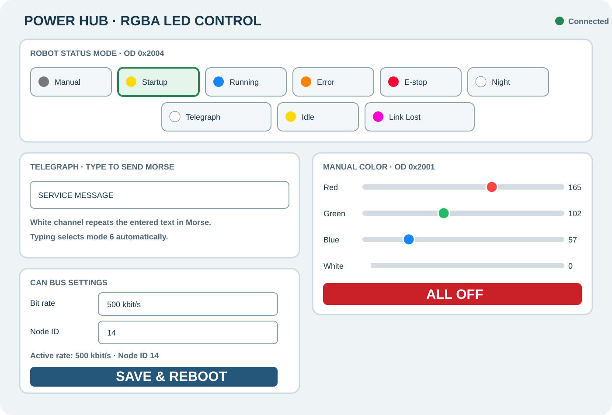
- Keep the robot in Hold with UVC Off/Disarmed. On the phone, join
rgba_led_XXXXXXusingalphaagtech. - Open
http://rgba_led.local; if it does not resolve, openhttp://192.168.10.1. Confirm the page says the hub is connected. - Robot Status Mode: use for an authorized indicator test only. The robot master normally selects the mode automatically and can overwrite a manual webpage selection within two seconds.
- Telegraph: type up to 32 supported letters/numbers/spaces. The hub selects mode 6 and repeats the text in Morse on the white channel.
- Manual Color: move R/G/B/W sliders to test a channel. Any slider edit selects mode 0. Use All Off to set every channel to zero.
- CAN Bus Settings: the installed values are 500 kbit/s and node ID 14. Do not change them during normal operation. Save & Reboot persists a change and immediately restarts the hub.
- After service, restore the automatic robot-selected mode and verify the physical LED follows robot state.
Power-hub CANopenNode objects
| Index | Type / access | Meaning |
|---|---|---|
0x2000 | uint8 RO | Node ID; installed value 14. |
0x2001:00 | uint8 RO | Highest subindex/count = 4. |
0x2001:01–04 | uint8 RW | Requested red, green, blue and white intensity, 0–255. |
0x2002:00 | uint8 RO | Highest subindex/count = 4. |
0x2002:01–04 | uint8 RO | Applied red, green, blue and white intensity. |
0x2003 | uint8 WO | All LEDs Off; any nonzero write clears all color commands, selects Manual and self-resets. |
0x2004 | uint8 RW | Mode: 0 Manual, 1 Startup, 2 Running, 3 Error, 4 E-stop, 5 Night, 6 Telegraph, 7 Idle, 8 Link Lost. |
Common CANopen communication/service objects are documented in CANopenNode object dictionaries. Raw SDO writes are for authorized field engineers only.
Maintenance
- With power isolated, inspect both cross-chassis connectors, strain relief, seals, pins, mounting and harness clearance.
- Clean the LED lens without scratching it; keep it visible from the operator's normal observation point.
- During scheduled testing, verify each R/G/B/W channel, every automatic status mode, node-14 heartbeat and applied values at
0x2002. - Record firmware revision, AP credentials under site policy, 500 kbit/s/node-14 configuration and any connector repair.
Power-hub troubleshooting
| Symptom | Likely area | Action |
|---|---|---|
| LED stays dark | Hub power, cross-chassis connector, LED connector, CAN/SDO command or all channels zero | Hold and isolate power. Inspect both side connections and LED wiring; then verify node 14, 0x2004 and 0x2002. |
| Wrong color/pattern | Manual/web override, wrong mode, swapped LED channels or stale CAN command | Compare 0x2004 and applied 0x2002; restore robot automatic mode and check R/G/B/W wiring. |
| Red remains after reset | Physical E-stop, active/repeated EMCY or robot still commanding E-stop | Do not bypass. Find and clear the safety cause, then verify a CAN error-reset and normal robot mode. |
| Webpage unavailable | Wrong AP, mDNS failure, hub not powered or two-client limit reached | Join rgba_led_XXXXXX, disconnect unused clients and use 192.168.10.1. |
| Hub offline on CAN | Wrong bit rate/node, CANH/CANL, ground, termination or cross-chassis connection | Hold; verify 500 kbit/s, node 14, wiring and approximately 60 Ω with power off. |
| One robot side also loses communication/power | Cross-chassis hub or harness fault | Stop operation and isolate power. Inspect the hub and both side harnesses before troubleshooting individual devices. |
Expected robot behavior after power-on
Normal power-on sequence
- Initial safe state. Switch on with the robot in Hold and all commands at zero. The main motor contactor and precharge relay begin open. The power-hub LED can remain dark briefly while the CAN stack and LED proxy start.
- Motor-driver precharge. The precharge relay closes and charges the motor-driver DC link through the precharge resistor for approximately 4 seconds. The robot must not drive during this period. Once node 14 receives the status command, the power-hub LED is solid yellow.
- Main motor contactor closes. After precharge, the main motor contactor closes. A single firm click or clunk is expected and confirms that motor-driver power has been connected. The precharge path remains on for about 0.5 second, then releases. Repeated clicking, buzzing, visible arcing, smoke or an electrical smell is not normal.
- Safety delay. Firmware waits approximately 5 more seconds while monitoring the emergency stop. The LED remains solid yellow.
- CAN node checks. At 500 kbit/s, the master waits for motor nodes
1,2,3and4, then robot-slave node10. Startup stops and the contactor opens if required heartbeats do not arrive. - Steering homing. Steering motors
1and2home in parallel. The steering wheels will turn to find their reference and apply their configured offsets. Some motor/gear sound is expected; striking an obstruction, oscillating indefinitely, or continuing beyond the allowed homing sequence is not. - Motor initialization. The controller initializes steering nodes 1–2 for position control and drive nodes 3–4 for velocity control. All four must succeed.
- Ready. The controller clears the startup fault, marks the robot running, and commands CANopen Operational. With a healthy control link and zero motion command, the LED changes to pulsing yellow. A nonzero driving command changes it to breathing blue.
During startup, solid yellow means startup in progress, pulsing yellow means ready/idle, breathing blue means commanded motion, flashing amber means startup fault, and solid red means emergency. See the single authoritative power-hub LED table for every pattern, priority and response.
If startup does not finish
- Keep the robot in Hold and UVC Off/Disarmed. Do not push or manually force steering while powered.
- If the expected contactor click never occurs, check the physical E-stop, remote CAN emergency, precharge/contactor power path and dashboard startup state. The firmware intentionally holds the contactor open during an emergency.
- If the contactor chatters, buzzes, arcs, smells hot or repeatedly opens and closes, press E-stop, isolate power and have a qualified field engineer inspect the precharge circuit, contactor supply and terminals.
- For flashing amber, record the dashboard fault number before cycling power. Check nodes 1–4, node 10, 500 kbit/s wiring/termination, motor power and homing sensors as appropriate. Cross-reference the power-hub troubleshooting table if the LED or both-side connection is also abnormal.
- After correction, perform a restrained startup test. Do not release the robot for operation until the sequence reaches Startup OK and normal idle indication.
Robot operation manual
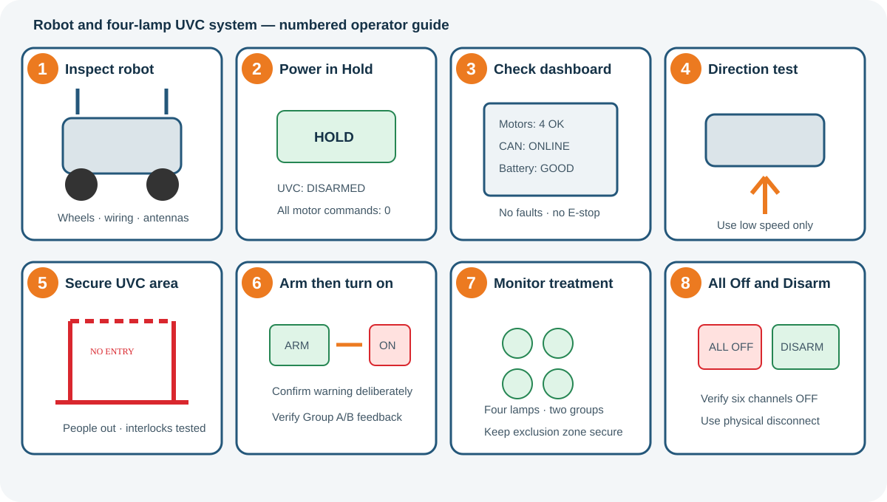
- Inspect wheels, steering, covers, power-hub cross-chassis connections, status LED, wiring, antennas, batteries, emergency stop, four UVC fixtures, and work area.
- Power up with the robot restrained, mode Hold, UVC Disarmed, and all commands zero. Follow the complete power-on sequence; expect one main-contactor click and automatic steering homing.
- Wait for Startup OK and the normal pulsing-yellow idle indication. Open the robot dashboard. Confirm motor nodes 1–4 OK, slave node 10 and power hub node 14 online, batteries healthy, CAN online, no emergency, relay online, both UVC groups Off, and all four lamps physically Off.
- Use the selected controller to enter Manual. Test forward, reverse, left, and right at low speed. Compare command and actual feedback.
- Drive with smooth inputs. Keep people clear and continuously watch link, LED, motor, battery, and emergency state.
- To stop normally, release the joystick, select Hold, and verify zero motion and the idle indication.
- For unsafe motion, use the physical emergency stop immediately; expect the LED to become solid red.
- At finish, park, Hold, both UVC groups Off/Disarm, and follow the approved power-down order.
Robot webpage
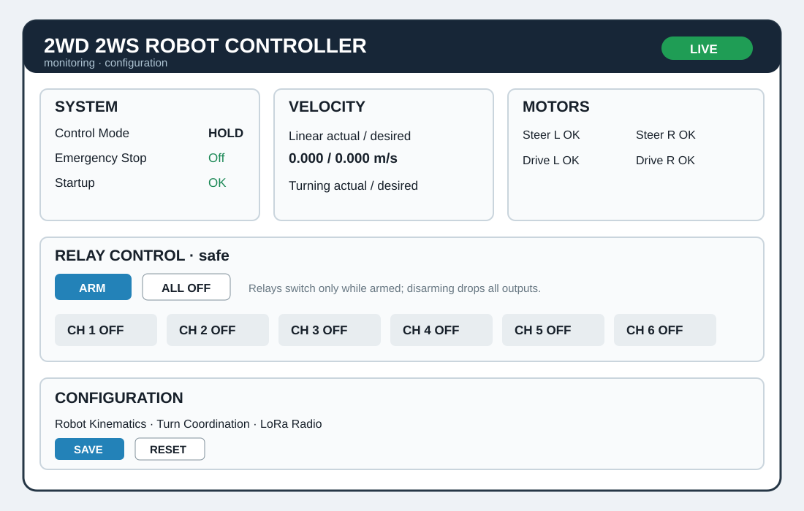
- Status cards: link, mode, emergency, GPS, and battery.
- Motor cards: OK/Fault/Offline, actual and commanded drive/steering.
- Relay card: online state, armed state, request, and applied outputs mapped to Group A/Left and Group B/Right.
- Configuration: radio/CAN/motion settings intended for trained service staff. Record old values first.
Four-lamp UVC operation manual
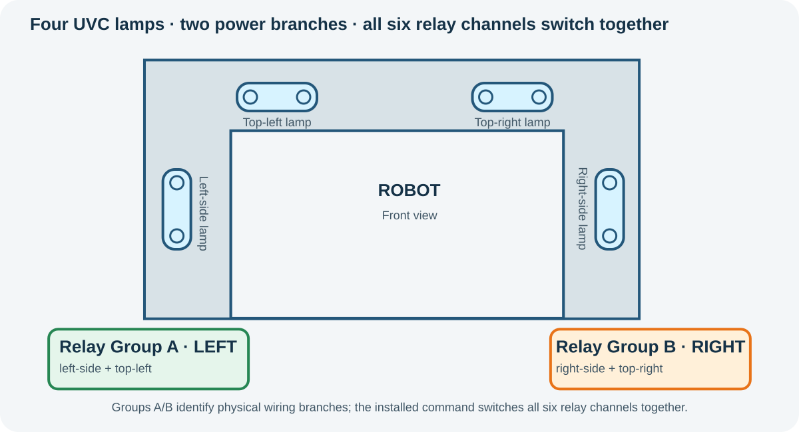
- Inspect the robot, relay, four lamp housings, Group A/B wiring labels, warning indicators, guards and physical disconnect.
- Park the robot in Hold. Verify UVC Disarmed, all six relay channels Off, and all four lamps physically Off.
- Confirm relay node
0x0Fis powered from its 5 V CAN port, online at 500 kbit/s, receiving the master heartbeat, and reporting no CAN emergency. - Use the approved UV-C field assessment to establish the exclusion boundary for lamp height/orientation, crop rows, terrain, reflections, speed and dose. Remove people and animals; post signs and place cones, flagging, gates or spotters as required.
- Arm UVC. Verify Armed while all six channels and four physical lamps remain Off.
- Request On; on Dual Joystick Remote Controller read the warning and press SW3 within 10 seconds or SW4 to cancel. Verify all six requested/applied bits and all four installed lamps from outside the exclusion zone.
- Monitor the full exclusion boundary, heartbeat, relay connection, applied feedback, travel speed, all four lamps and external indicator throughout treatment. Stop if anyone approaches, the robot deviates, or any required status becomes abnormal.
- Command All Off; verify all six applied bits, four physical lamps and indicators Off; Disarm; then use the physical disconnect before entry.
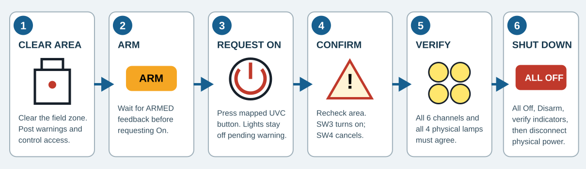
For the complete field procedure, including dose/speed, exclusion-zone setup, treatment records and stop conditions, see Operations · UVC treatment.
Robot and UVC troubleshooting
| Problem | Operator response |
|---|---|
| One motor Offline/Fault | Select Hold; do not drive; inspect power/CAN/mechanical obstruction; have service staff read the status word. |
| Steering direction or angle wrong | Stop; Hold; verify homing and feedback; do not compensate with aggressive joystick input. |
| Relay Offline | Keep UVC physically disconnected; verify relay power, the 500 kbit/s CAN setting, node 0x0F, and master heartbeat. |
| UVC switch snaps Off | The relay is disarmed, CAN emergency is active, heartbeat is missing, or the request was rejected. |
| One UVC channel differs | All Off, Disarm, physical disconnect, and service that channel. Do not continue with partial feedback. |
| Robot webpage unavailable | Confirm robot Wi-Fi, remain connected despite No Internet, use the numeric address, and check robot power. |
UVC lamp specifications
The robot uses four Philips TUV PL-L 55W/4P HF germicidal lamps. This is a clear, single-ended twin-tube UV-C fluorescent lamp intended for professional disinfection equipment. Use only the exact approved lamp and a compatible high-frequency ballast/fixture.
| Specification | Value |
|---|---|
| Manufacturer / family | Philips (Signify) TUV PL-L |
| Ordering name | TUV PL-L 55W/4P HF 1CT/25 |
| Bulbs.com SKU / ordering code | 294645 / TUV PL-L 55W/4P/HF |
| Technology / shape / finish | Germicidal compact fluorescent; single twin tube; clear |
| Base | 2G11, four-pin, single-ended |
| Electrical input | 55 W; nominal 105 V lamp voltage; nominal 0.525 A lamp current |
| UV-C peak | 253.7 nm |
| UV-C output | 18.7 W at 100 operating hours |
| Useful life | 9,000 hours nominal; 20% UV depreciation at useful life |
| Dimensions | Approximately 535 mm maximum overall length; 38 mm maximum overall width; tube diameter 18 mm |
| Weight | 134 g per lamp |
| Mercury | Contains 4.4 mg Hg; recycle as a mercury-containing lamp |
| Safety class | Risk Group 3 ultraviolet product; unshielded radiation can severely injure skin and eyes |
Sources: Bulbs.com product page and Signify product datasheet.
Four-lamp locations and relay groups
| Position | Relay group | Pair |
|---|---|---|
| Left-side lamp | Group A · Left | Top-left lamp |
| Top-left lamp | Group A · Left | Left-side lamp |
| Right-side lamp | Group B · Right | Top-right lamp |
| Top-right lamp | Group B · Right | Right-side lamp |
Replace a UVC bulb
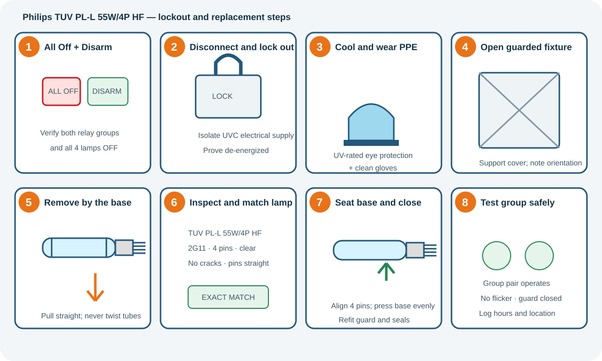
- Make the UVC system safe. Park in Hold, command both relay groups Off, verify all four lamps and indicators Off, then Disarm.
- Isolate energy. Switch off and physically disconnect the UVC supply. Apply lockout/tagout. A qualified person must prove the fixture/ballast is de-energized with an appropriate tester.
- Cool and put on PPE. Wait for the lamp and ballast to cool. Wear clean gloves, safety glasses, and the site-required electrical/UV PPE. Keep a replacement-lamp container nearby.
- Open the fixture. Support and remove the guard/cover according to the fixture instructions. Note the lamp base orientation, clips, seals, reflector, wiring and every installed safety device. Do not damage them.
- Remove the old lamp by its base. Release any retaining clip. Grip the plastic 2G11 base—not the glass tubes—and pull straight out evenly. Do not twist, bend, or lever the twin tubes.
- Inspect and match. Inspect socket, pins, clips, guard, seals, reflector, ballast wiring, and heat damage. Confirm the replacement label says
TUV PL-L 55W/4P HF, 2G11 four-pin, clear. Reject cracked lamps or bent pins. - Install. With clean gloves, align all four pins and press the base straight into the socket until fully seated. Refit retaining clips, guard, seals, and covers exactly. Clean fingerprints using only the manufacturer-approved method.
- Controlled test. Establish the field exclusion zone, remove lockout under the site procedure, restore power, and test only the affected relay group remotely. Verify both lamps in that group, no flicker/arcing, correct applied feedback, warning indicator, every installed safety device, Off, and Disarm. Record position, group, date, and operating hours.
Broken lamp procedure
- Do not use a vacuum cleaner.
- Keep people away and ventilate the area for at least 30 minutes, following the Signify datasheet and site mercury procedure.
- With the specified gloves/PPE, collect pieces without raising dust. Place debris and cleanup material in a sealed plastic bag or approved mercury-lamp container.
- Send the lamp to the local approved recycling/hazardous-waste facility; do not place it in ordinary trash.
- Inspect and decontaminate the fixture before installing another lamp.
Replacement interval
Track hours for each of the four positions. Replace at the site’s validated UV-dose limit and no later than the approved useful-life policy. A lamp may still glow after useful UV-C output has declined. Replace early for blackened ends, unstable starting, flicker, damaged glass/base/pins, ballast or socket overheating, or failed dose verification.
Recycle used UVC bulbs
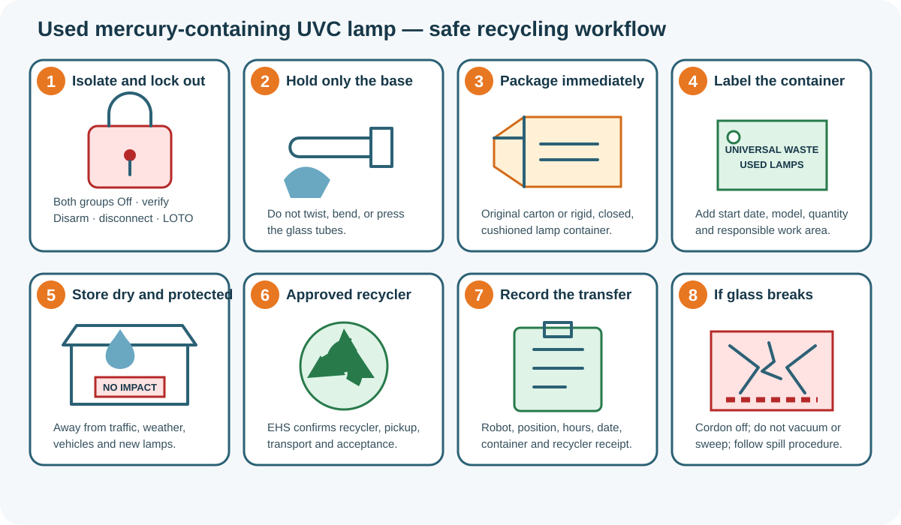
- Isolate before removal. Complete the Off, physical verification, Disarm, disconnect and lockout steps in Replace a UVC bulb. Let the lamp cool and wear clean gloves and safety glasses.
- Handle by the base. Remove the lamp without twisting or stressing the glass. Never tape lamps together or bundle them with rubber bands.
- Package immediately. Place the intact lamp in its original sleeve/carton or a closed, structurally sound rigid container sized to prevent movement and breakage. Add compatible cushioning without pressing on the twin tubes.
- Label the container. Mark it “Universal Waste—Lamp(s),” “Waste Lamp(s),” or “Used Lamp(s)”, as the site program requires. Add the accumulation start date, lamp model, quantity and responsible work area.
- Store safely. Keep the closed container dry, protected from traffic, weather and impact, and separate from new lamps. Do not leave removed lamps loose on the robot, in a service vehicle or in the field.
- Use an approved recycler. The site environmental/EHS contact must select a mercury-lamp recycler, collection agency or compliant mail-back/pickup service and confirm transport and acceptance requirements before shipment.
- Keep records. Record robot ID, lamp position/group, removal date, operating hours, reason for removal, container ID, quantity, recycler and pickup/shipment record.
- If a lamp breaks. Stop work, keep people and animals away, prevent fragments from spreading, and follow the site's mercury-lamp spill procedure and current environmental-agency guidance. Do not use a normal vacuum or dry broom. Package and label all fragments and cleanup materials for the approved handler.
Environmental guidance: U.S. EPA—recycling mercury-containing bulbs, U.S. EPA—business lamp-recycling program, and U.S. EPA—broken mercury-containing lamp cleanup. State or local rules may be more stringent.
UVC robot travel-speed calculator
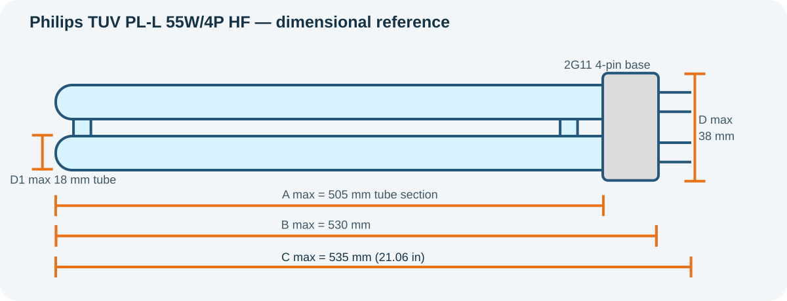
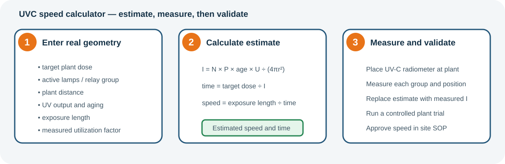
Calculator method
If measured irradiance is entered, the calculator uses it directly. Otherwise it uses a conservative point-source screening model:
I = N × Puvc × aging × utilization ÷ (4πr²)exposure time = target dose ÷ Irobot speed = effective exposure length ÷ exposure time
This model does not represent the twin tubes, reflector, plant canopy, lamp orientation, or left/right group overlap. It is unsuitable as final validation. At 9,000-hour useful life, the datasheet lists 20% depreciation, so an aging value of 80% represents that nominal endpoint before other losses.
Field validation procedure
- Use the approved target dose for the specific plant, pathogen/pest, growth stage, and number of passes.
- Place a calibrated 253.7 nm radiometer sensor at the nearest, farthest, shaded, and representative plant surfaces. Keep personnel outside the UV-C area and use remote readings where possible.
- Operate Group A and Group B separately and record irradiance for left-side/top-left and right-side/top-right pairs. Confirm which lamps actually reach each plant location.
- Enter the lowest relevant measured irradiance in the calculator. Use the measured longitudinal footprint for exposure length.
- Run a controlled low-dose trial, inspect plants over the protocol’s observation period, and confirm delivered dose with a dosimeter/radiometer.
- Document approved speed, lamp hours, distance range, group selection, pass spacing, number of passes, and rejection limits in the field SOP.
UVC AC power: two inverters and four ballasts
The UVC system is split into two complete AC power branches. The robot’s nominal 48 VDC system feeds one Victron inverter on the left and one on the right. Each inverter supplies 120 VAC to two relay-controlled ballast inputs. Each Keystone ballast drives exactly one Philips lamp.
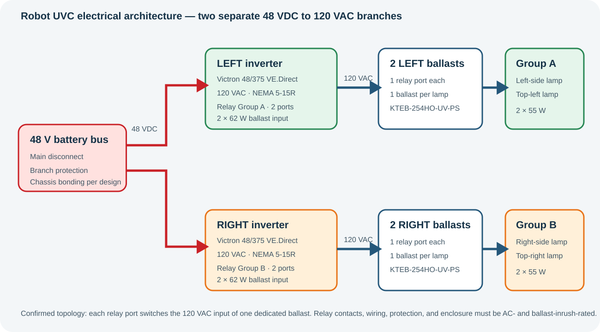
Victron inverter specifications — each side
| Item | Victron Inverter 48/375 VE.Direct, 120 V |
|---|---|
| Quantity | 2 total: one left, one right |
| Function | 48 VDC battery power to pure sine-wave 120 VAC |
| AC outlet | NEMA 5-15R |
| Continuous output | 375 W at 25°C; 300 W at 40°C |
| Time-limited / peak | 450 W for 10 s cold start; 600 W for 2 s peak |
| Output | 120 VAC ±3%; 60 Hz ±0.1% |
| 48 V model DC input range | 36.8–62.0 VDC |
| Default low shutdown / restart | 37.2 V shutdown; 43.6 V restart/alarm |
| Charged detect | 56.0 V default |
| Maximum efficiency | 88% for 48/375 |
| Zero-load power | 9 W; approximately 2 W in default ECO mode |
| Environment | −40 to +65°C; derate 1.25%/°C above 40°C; maximum 95% non-condensing humidity |
| Enclosure | IP21; steel chassis/plastic cover |
| Size / mass | 86 × 165 × 260 mm; 3.0 kg |
| Protection | Short circuit, overload, high/low battery, overtemperature, AC on output, and excessive DC ripple |
Keystone ballast specifications — each lamp
Terminology: the electrical component is a ballast (sometimes informally called a “blaster”). The installed model is KTEB-254HO-UV-PS.
| Item | KTEB-254HO-UV-PS |
|---|---|
| Quantity | 4 total: one ballast per UVC lamp |
| Type | T5HO electronic, programmed start, high power factor |
| Compatible lamp configuration used | One FT55W/2G11 lamp per ballast |
| Input | 120–277 VAC ±10%, 50/60 Hz |
| One-lamp input at 120 V | Approximately 62 W and 0.52 A; power factor 0.96; maximum THD 15%; crest factor below 1.70 |
| Minimum start temperature | 0°F / −18°C |
| Maximum case temperature | 194°F / 90°C |
| Features | Class P, Type 1 Outdoor listing; lamp end-of-life protection; Sound Rated A; FCC Part 18 Class A non-consumer limits |
| Standard case | Approximately 16.89 × 1.20 × 1.00 in; steel case; verify the exact suffix/nameplate installed |
| Wiring | The 120 VAC input of each ballast is connected to one relay output port. Use Keystone one-lamp diagram F1-11 on the lamp side. Unused yellow leads for one-lamp operation must be capped and insulated to 600 V exactly as specified. |
Side loads and capacity
| Branch | Loads | Nominal 120 VAC input | Engineering note |
|---|---|---|---|
| Group A · Left | 2 ballasts × 1 lamp | About 124 W, 1.04 A total | Below the inverter’s 375 W/25°C rating; validate start/inrush, temperature, wiring, and protection. |
| Group B · Right | 2 ballasts × 1 lamp | About 124 W, 1.04 A total | Independent from left; one-side failure must not be mistaken for total UVC shutdown. |
| Both groups | 4 ballasts × 1 lamp | About 248 W AC total | Split between two inverters. Approximate nominal DC demand is about 5.9 A total at 48 V and 88% efficiency, excluding cabling and transient losses. |
Preflight and group test
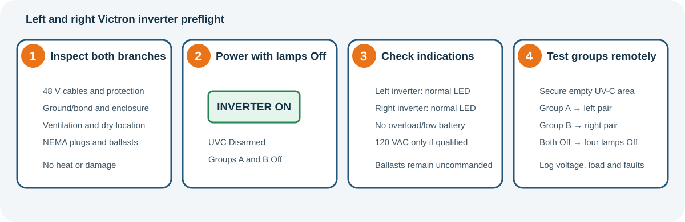
- With UVC locked out, inspect both 48 V inverter feeds, branch protection, grounding/bonding, ventilation, mounting, NEMA plugs, relay wiring, four ballasts, sockets, and lamp leads.
- Restore inverter power while UVC remains Disarmed and all four relay ports Off. Confirm both inverters indicate normal operation and no low-battery, overload, ripple, or temperature alarm.
- With the area secured, test one relay port at a time: Left-side, Top-left, Right-side, Top-right. Verify exactly one matching ballast/lamp responds to each port.
- Test Group A: only left-side and top-left operate. Test Group B: only right-side and top-right operate.
- Command both groups Off, Disarm, and verify four physical lamps Off. Test master-heartbeat loss and CAN emergency shutdown.
- Record 48 V input, AC output, inverter/ballast temperature, branch current, relay port, lamp position, and alarms under steady operation.
Inverter and ballast troubleshooting
| Symptom | Checks |
|---|---|
| Both lamps on one side fail | Keep area locked out. Check that side’s inverter LED/alarm, 48 V branch protection, disconnect, NEMA connection, 120 VAC output, and group control. |
| One lamp fails; its paired lamp works | The inverter is probably supplying the side. Check that lamp’s relay port, ballast AC input, ballast, socket, lamp pins, and one-lamp wiring. |
| Inverter overloads at start | Check ballast faults, shorted wiring, actual inrush, temperature derating, and branch load. Do not increase protective-device ratings without an engineered review. |
| Inverter cycles in ECO mode | The electronic ballast/load detection may not remain stable. Qualified staff must validate ECO thresholds or use the approved always-On inverter mode; never defeat UVC safety controls. |
| Lamp flickers or blackens | Stop the group. Check lamp age/pins/socket and ballast wiring/case temperature; replace damaged components and verify UV output. |
| Relay feedback Off but lamp remains on | Emergency: use physical UVC disconnect. Suspect welded/miswired relay contact or alternate feed; lock out and service before reuse. |
Sources: Victron VE.Direct 120 V technical specifications, Victron manual, Keystone ballast catalog, and KTEB-254HO-UV-PS specification sheet.
RTK GPS: component overview
The fixed base knows its own position and sends correction messages. The rover is mounted on the robot and combines satellite signals with those corrections. RTK gives the navigation system a much more precise position than ordinary GPS.
Features
- Base survey-in or stored fixed coordinates.
- RTCM correction output by LoRa and optional NTRIP.
- Robot rover correction input by LoRa or NTRIP.
- Local Wi-Fi status/configuration pages.
- Fix, satellite, accuracy, correction, and battery information.
- Rover position/status output over CAN.
GPS base and rover specifications
| Item | Base | Robot rover |
|---|---|---|
| Local hostname | http://mars_gnss_base.local | http://mars_gnss_rover.local |
| Default AP name | mars_gnss_base_XXXXXX | mars_gnss_rover_XXXXXX |
| Factory AP password | alphaagtech | |
| Direct AP address | http://192.168.10.1 | |
| CANopen firmware default | 21 (0x15), configurable | 20 (0x14), configurable |
| CAN bit rate | 500 kbit/s for this robot system; changes take effect after restart | |
| Factory GNSS mode | Self Survey; 60 s minimum and 2.0 m target in firmware | Dual GNSS; 5 Hz update |
| Factory RTK LoRa | 915 MHz, 500 kHz, SF6; base and rover must match and must be separated from RC LoRa | |
| Correction rate/path | RTCM 1 Hz; LoRa; optional local/online NTRIP and serial output | LoRa; optional serial RTCM or NTRIP input |
| NTRIP default | Disabled; port 2101; port 80 reserved for webpage | |
| Serial default | RTCM output disabled; saved baud 115200 | RTCM input disabled; NMEA output disabled; saved baud 115200 |
GPS physical and data connections
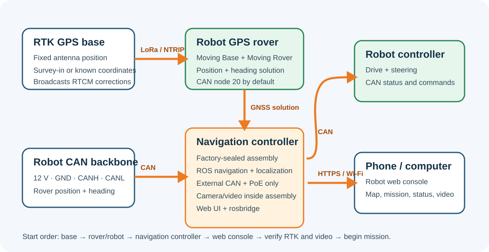
| Connection | Base | Robot rover |
|---|---|---|
| GNSS antenna(s) | One surveyed/stable antenna point with clear sky; never move after survey | Moving Base and Moving Rover antennas rigidly mounted with clear sky and measured offsets |
| Antenna coordinate frame | Not applicable | Offsets in centimeters: +X forward, +Y left, measured from robot reference point |
| RTK LoRa antenna | Correction transmitter | Correction receiver; same frequency, bandwidth and SF as base |
| Configuration Wi-Fi AP | Always on; local page and optional local NTRIP service | Always on; local page only; hostname mars_gnss_rover.local |
| Internet/correction Wi-Fi | Optional station link for online NTRIP caster output | Separate optional station link to base AP or Internet router for NTRIP input |
| Serial | Optional RTCM output, 4800–921600 baud | Optional RTCM input or GPGGA output; do not enable serial RTCM input and NMEA output together |
| CAN | Node 21 if connected to a CAN system; normally remote from robot | Power-hub 5 V CAN port: pin 1 = 5 V supply, pin 2 = CANH, pin 3 = CANL, pin 4 = GND; default node 20; 500 kbit/s |
GPS base webpage and setup
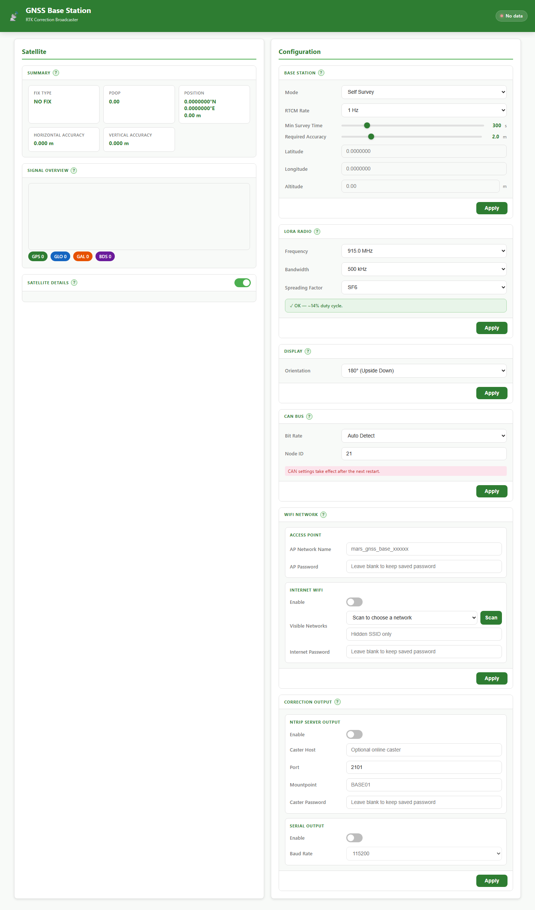
Open the base page
- Mount the base antenna on a rigid point with the clearest available sky. Attach GNSS and RTK LoRa antennas before power.
- Join
mars_gnss_base_XXXXXXusingalphaagtech, unless site credentials were changed. - Open
http://mars_gnss_base.local. If mDNS is unavailable, openhttp://192.168.10.1. - Confirm the green page header is GNSS Base Station. Read Fix Type, PDOP, position, horizontal/vertical accuracy, signal chart, constellation counts, and optional satellite details.
Self Survey for a temporary/new base point
- In Base Station, select Self Survey.
- Select RTCM rate. Start with 1 Hz unless the approved radio-capacity plan supports a higher rate.
- Set minimum survey time and required accuracy. Longer time and a tighter target generally take longer and still require an unobstructed sky.
- Select Apply. The page reports Survey started and shows elapsed time/current accuracy.
- Do not touch the antenna, tripod, cable, or ground reference. Wait for Survey Complete.
- Verify the surveyed position. Firmware stores the precise ECEF result and changes the saved mode to Fixed Location so the base can reuse that point after restart.
Fixed Location for a known point
- Use only coordinates supplied by the site survey record. Select Fixed Location.
- Choose Manual Entry and enter latitude, longitude, and altitude, or use Time Average only under the approved site method.
- Check hemisphere/sign, datum, altitude reference, digits, and antenna-height convention. A plausible but wrong coordinate shifts every rover result.
- Select Apply, then confirm the displayed position matches the record before allowing correction use.
Configure correction outputs
- In LoRa Radio, set frequency, bandwidth, and spreading factor to the approved RTK plan. The page’s bandwidth-status line must say the selected link can carry the RTCM rate. Select Apply.
- For a rover connected to the base AP by Wi-Fi, enable NTRIP Server Output, leave Caster Host blank, and set port/mountpoint. The rover uses the base AP address, normally
192.168.10.1. - For an online caster, first enable Internet WiFi, scan/select the router and apply. Then enable NTRIP output and enter caster host without
http://, port, mountpoint, and caster password. - For wired RTCM, enable Serial Output and select the receiving device’s matching baud rate.
- Do not use port 80 for NTRIP. Watch Stream Status and verify corrections at the rover rather than assuming Apply succeeded.
Other base controls
| Panel | Instruction |
|---|---|
| Display | Select the orientation that makes the onboard display upright; Apply. |
| CAN Bus | Select 500 kbit/s and a unique node ID. Default is 21. Auto Detect is a diagnostic option, not the commissioned robot-system setting. Restart is required before CAN changes take effect. |
| WiFi Access Point | Change AP name/password only during controlled service. Record the new credentials before Apply; the phone may disconnect when they change. |
| Satellite Details | Turn on for engineering diagnosis of constellation, SNR, elevation/azimuth, correction and ephemeris data; turn off for a simpler operator view. |
GPS rover webpage and setup
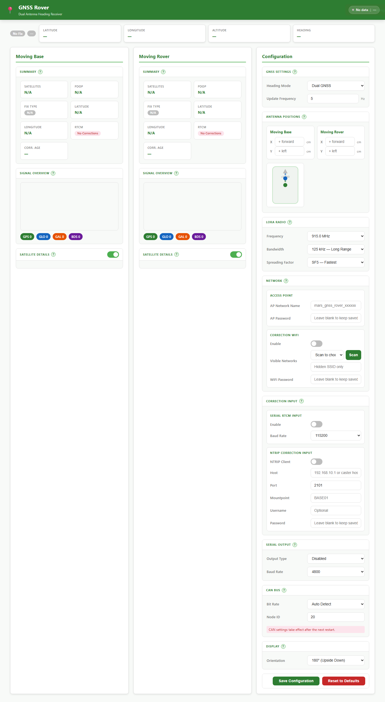
Open and read the rover page
- Keep the robot in Hold. Confirm both GNSS antennas, RTK LoRa antenna, and CAN cable are secure before power.
- Join
mars_gnss_rover_XXXXXXwithalphaagtech, unless site credentials were changed. - Open
http://mars_gnss_rover.local. Usehttp://192.168.10.1only as the direct-AP fallback. - Check the top solution badge and the Moving Base and Moving Rover summaries: satellites, PDOP, fix type, latitude/longitude, RTCM state, correction age, signal charts, and constellation counts.
- Do not start Auto navigation unless the solution badge is OK, both receivers are plausible, corrections are fresh, and the site-required fix/accuracy is met.
GNSS mode and antenna geometry
- Select Dual GNSS for the normal two-receiver position/heading calculation, or Moving Baseline only when the installed system and field procedure require it.
- Set update frequency from 1–20 Hz. Factory default is 5 Hz; higher rates increase processing and serial bandwidth requirements.
- Measure the center of each antenna relative to the robot reference point. Enter Moving Base X/Y and Moving Rover X/Y in centimeters, where +X is forward and +Y is left.
- Check the diagram direction and signs. The calculation rejects invalid antenna geometry and a baseline under 20 cm; the webpage also warns below 10 cm at save time.
- Select Save Configuration. After a mode/geometry change, keep the robot stationary and verify heading against a known direction before navigation.
Select and configure correction input
| Method | Setup | Expected status |
|---|---|---|
| RTK LoRa | Match base frequency, bandwidth and SF exactly; leave the approved RC/RTK separation intact. | LoRa corrections; correction age remains current. |
| Base local NTRIP | Enable Correction WiFi; select the base AP; use host 192.168.10.1, base port/mountpoint and credentials; enable NTRIP Client. | NTRIP corrections. |
| Online NTRIP caster | Enable Correction WiFi and join an Internet router; enter caster host, port, mountpoint, username and password; enable NTRIP Client. | NTRIP connects and corrections become fresh. |
| Serial RTCM | Disable NMEA Serial Output, enable Serial RTCM Input, and match 4800–921600 baud to the sender. | Serial corrections. |
CAN, serial output, display and network
- Leave NMEA Serial Output disabled unless another device explicitly requires GPGGA. If enabled, choose a baud rate high enough for the GNSS update frequency; the page warns when it is too low.
- For CAN Bus, select 500 kbit/s and a unique node ID. Default rover ID is 20. Auto Detect is for diagnosis only. Save, then restart before expecting CAN changes.
- Set Display Orientation so the onboard display is upright.
- The rover configuration AP is always available. Correction WiFi is a separate client connection; changing one does not automatically change the other.
- Use Reset to Defaults only under an authorized recovery procedure. It erases saved radio, antenna, correction, network, CAN, and display settings and requires complete recommissioning.
Meaning of rover solution messages
| Message | Meaning / response |
|---|---|
| OK | Geometry calculation succeeded; still verify RTK fix, accuracy, correction age and CAN delivery. |
| No fix | A receiver lacks a usable GNSS fix. Improve sky view and wait. |
| Invalid coords | Input position is invalid; inspect GNSS data and configuration. |
| UTM zone split | The two receiver coordinates fall in different UTM zones; inspect coordinates and placement. |
| Baseline <20cm | Measured antenna separation is too short for the solution. |
| Antenna cfg | Saved offsets are unset, too close, or inconsistent. |
| RelPos invalid / missing | Moving-baseline relative-position data is invalid or absent; check mode, receivers, corrections and wiring. |
GPS base and rover field workflow
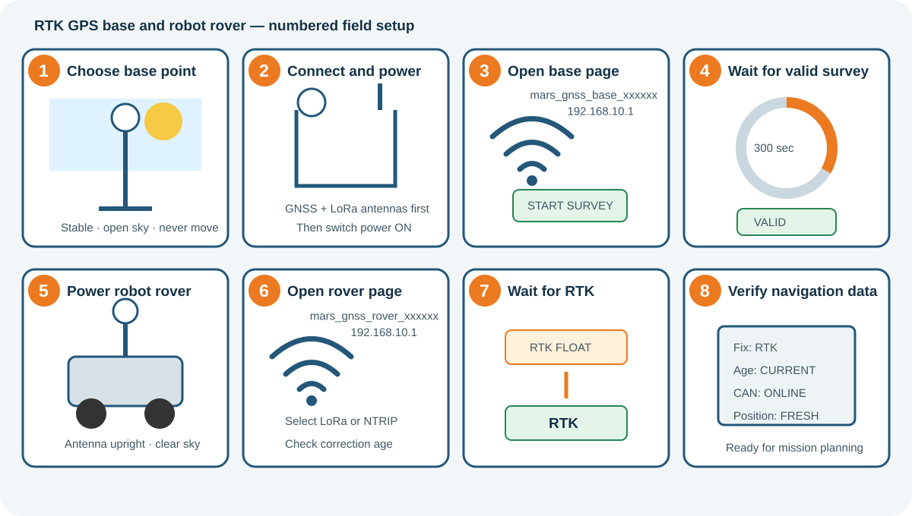
- Place and identify the base. Use the recorded base point and antenna height, or establish a new rigid point with clear sky.
- Power the base. Attach antennas first. Open
mars_gnss_base.localand verify the saved mode, position, corrections, and RTK radio plan. - Complete position setup. Finish Self Survey or verify Fixed Location. Do not move the antenna after this step.
- Verify correction output. Confirm LoRa, NTRIP, or serial output is active using the selected field method.
- Power the robot rover. Check the two GNSS antenna mounts/offsets, LoRa antenna, and CAN connection.
- Open
mars_gnss_rover.local. Verify mode, both receiver summaries, antenna geometry, chosen correction input, and fresh correction age. - Verify the robot solution. Require the site-approved RTK fix and accuracy, stable heading, OK solution status, and correct position/heading while the robot is stationary.
- Verify delivery. Confirm rover node 20 and fresh GPS data at the robot and navigation console. Only then allow Auto; continue monitoring correction age and solution quality.
GPS troubleshooting
| Problem/status | What to inspect | Operator response |
|---|---|---|
mars_gnss_base.local or mars_gnss_rover.local does not open | Wrong Wi-Fi, mDNS unsupported, changed AP credentials | Stay joined to the device AP and use 192.168.10.1. Confirm the page title before editing. |
| Base survey never completes | Poor sky, antenna movement, multipath, damaged cable, target too strict | Keep antenna rigid; improve sky view; inspect hardware; restart the approved survey. |
| Base restarts at an unexpected position | Wrong fixed record or survey point moved | Stop Auto. Compare displayed coordinates/ECEF-derived position with site record; recommission the base. |
| Rover says No fix | One/both receivers lack usable GNSS | Move to open sky, inspect both antennas/power, and wait. |
| Rover stays RTK Float or corrections age | Base invalid, LoRa mismatch/interference, NTRIP/Internet failure, multipath | Check base stream first; verify chosen correction path and radio separation; improve sky view. |
| NTRIP waiting for WiFi | Correction WiFi disabled/not connected | Enable it, scan/select the correct network, apply credentials, and recheck status. |
| NTRIP missing host or mountpoint | Incomplete client settings | Enter the exact host, port and mountpoint; do not include http://. |
| Baseline <20cm / Antenna cfg | Offsets or physical separation wrong | Hold the robot; measure antennas; correct X/Y signs/units; save and verify heading. |
| RelPos invalid or missing | Moving Baseline mode lacks valid relative position | Verify mode, receiver operation, corrections and antenna geometry. |
| Good rover page, no robot/navigation position | Wrong 500 kbit/s setting, node ID, wiring or navigation path | Keep Hold; verify CAN port pinout, live rover node, 500 kbit/s, restart after CAN changes, heartbeats and navigation topics. |
| CAN setting changed but no effect | Restart not completed | Record the change, safely restart the device, then verify the live node and 500 kbit/s setting. |
Operate the complete robot system
This chapter brings the component instructions together into three field procedures. Use Manual driving to position or transport the robot, UVC operation to perform a controlled treatment, and Autonomous navigation to execute a planned route. Read the linked component chapter whenever a control, status message, or connection is unfamiliar.
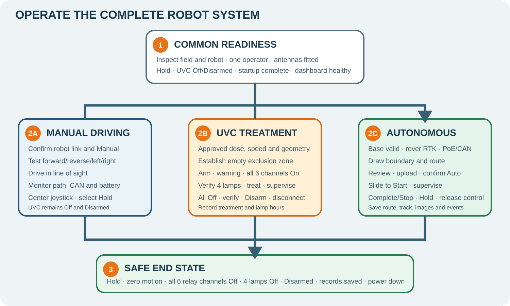
Common readiness procedure
- Choose one responsible operator. Identify who holds the handheld, who watches the work area, and who can reach the physical emergency stop. Do not allow two handhelds or two web operators to issue commands at the same time.
- Inspect the field and robot. Check terrain, slopes, ditches, people, animals, crop clearance, wheels, steering, covers, batteries, antennas, GNSS mounts, navigation-controller window, UVC fixtures, cables, eight side ports, power-hub LED, warning devices, and physical emergency stop.
- Make the initial state safe. Center both joysticks. Select Hold. Confirm UVC is Disarmed, all six relay channels are Off, all four lamps are physically Off, and the UVC disconnect is open unless the UVC procedure specifically requires power later.
- Attach and identify antennas. Fit every required antenna before power-on. On the Dual Joystick Remote Controller: left is RTK LoRa, middle is GNSS, and right is robot-control LoRa. Keep the RTK radio plan different from the RC radio plan.
- Power the robot in Hold. Keep clear of the steering wheels. Expect motor-driver precharge, one firm contactor sound, automatic steering homing, then a pulsing-yellow ready/idle power-hub indication. Stop for repeated contactor noise, abnormal steering, solid red, flashing amber, smoke, odor, or heat.
- Verify the dashboard. Require no emergency or startup fault; motor nodes 1–4 online; slave node 10, power hub node 14, relay node 15, and rover node 20 online when required; batteries acceptable; CAN at 500 kbit/s; and plausible command/feedback values.
- Select the operation below. Do not enter Manual, arm UVC, or start Auto until every readiness item for that operation is satisfied.
Operation 1 · Manual driving
- Complete the Common readiness procedure. Stand where the complete robot and intended path remain visible. Keep bystanders clear and the emergency stop accessible.
- Confirm the handheld reports a healthy robot link and Hold. “Robot Lost,” Offline, stale data, or an emergency overlay prohibits driving.
- Request Manual: short-press Button 1 on Single Joystick Remote Controller or press SW5 on Dual Joystick Remote Controller. Wait until the handheld and robot dashboard both report Manual.
- With open space around every wheel, apply a very small forward command. Verify both drive wheels move the robot forward and feedback follows the command. Release the joystick and confirm zero motion.
- Repeat at low speed for reverse, left steering, and right steering. Stop immediately if direction, steering angle, sound, current, or feedback is wrong.
- Drive with smooth joystick inputs and walking-speed supervision until the route is proven. Reduce speed before turns, slopes, loose soil, row ends, obstacles, or poor visibility.
- Continuously monitor robot link, battery, CAN, motor status, power-hub indication, surrounding people/animals, wheel clearance, and the actual path. A nonzero motion command normally changes the hub indication from pulsing yellow to breathing blue.
- For a normal stop, center/release the joystick, confirm zero motion, then press Button 1 or SW5 to request Hold. Verify Hold on the display and verify the robot is physically stationary.
- For an unsafe stop, press the physical emergency stop. Do not rely on a webpage, radio command, mode label, or status LED as the only emergency action.
- When manual work is complete, park on stable ground, select Hold, verify UVC Off/Disarmed, and follow System shutdown.
Manual operation is complete when: the robot is stationary in Hold, the joystick is centered, motion feedback is zero, no new fault is present, and the next operator understands the machine state.
Operation 2 · UVC treatment
- Confirm treatment authority. Use the approved crop/treatment protocol, target dose, lamp-to-plant distance, robot speed, pass spacing, number of passes, and allowable environmental conditions. The speed calculator is only a planning aid; use radiometer and field validation.
- Inspect the UVC hardware with power isolated. Check four lamps, guards, sockets, ballast wiring, relay connections, two inverters, branch protection, warning indicator, labels, and physical disconnect. Confirm the relay electronics use a power-hub 5 V CAN port.
- Identify all four lamp positions. Confirm left-side, top-left, right-side, and top-right labels and their ballast/relay branches. Reject any missing, cracked, loose, blackened, wet, or incorrectly labelled lamp assembly.
- Establish the exclusion zone. Use the site UV-C assessment for lamp height/orientation, measured irradiance, reflections, crop canopy, travel path, slopes, and nearby access. Remove people and animals; place signs, cones, flagging, gates, or spotters as required.
- Position the robot. Use Manual driving with UVC Off/Disarmed. Park at the treatment start in Hold, center the joystick, and verify zero motion.
- Energize the UVC supply without turning lamps on. From outside the exclusion zone, close the approved physical UVC supply path. Confirm both inverters are normal, relay node 15 is online, all six applied relay bits are Off, and all four lamps remain physically Off.
- Arm deliberately. Command Arm and confirm Armed. Arming alone must not illuminate any lamp. If a lamp starts, use the physical UVC disconnect and remove the system from service.
- Request UVC On. On Dual Joystick Remote Controller, read the UV-C warning and press SW3 within 10 seconds to confirm; press SW4 to cancel. The robot commands all six relay channels together. Verify the requested and applied status agree.
- Verify illumination remotely. From outside the zone, confirm the left-side, top-left, right-side, and top-right lamps are operating and the external warning indication is active. Never approach a dark-looking lamp while other lamps are energized.
- Perform the treatment. Drive only at the validated speed and geometry. Maintain the specified plant distance and pass spacing. Continuously supervise the exclusion boundary, travel path, speed, robot link, CAN heartbeat, relay feedback, inverter status, lamp condition, and warning indicator.
- Stop for any abnormal condition. Command All Off and use the physical disconnect for entry, unexpected access, robot deviation, loss of link/heartbeat, relay disagreement, inverter alarm, lamp flicker/breakage, obstruction, uncertain speed/dose, or a lamp that does not follow the command.
- Finish the pass. Center the joystick and select Hold. Command All Off; verify all six applied bits Off and all four lamps physically Off. Then Disarm.
- Make entry safe. Open the physical UVC disconnect, apply lockout when inspection is required, wait the site-required cooling/ventilation time, and only then enter with the task-required PPE.
- Record the treatment. Log field/row, date, operator, crop, dose basis, speed, distance, passes, lamp hours, active lamp positions, alarms, interruptions, and any maintenance needed.
UVC operation is complete when: the robot is in Hold, all six relay channels are verified Off, all four lamps and warning indicators are physically Off, UVC is Disarmed, the physical supply is disconnected, and the treatment record is complete.
Operation 3 · Autonomous navigation
A · Prepare localization and system
- Place the RTK base at its recorded point with clear sky. Attach its GNSS and RTK LoRa antennas, power it, and open
mars_gnss_base.local. Verify Fixed Location or complete the approved survey; do not move the base afterward. - Verify the base correction output. The base and rover RTK LoRa settings must match each other and must remain separated from the RC LoRa settings.
- Complete the Common readiness procedure. Confirm the rover receives 5 V and CAN from its power-hub 5 V CAN port and reports an approved RTK fix, fresh correction age, stable heading, acceptable accuracy, and solution status OK.
- Confirm the navigation controller receives operating power/Ethernet from the PoE switch and uses its assigned power-hub 5 V CAN connection. Configure the operating phone for simultaneous robot Wi-Fi and cellular Internet according to Robot Wi-Fi + cellular Internet. Require web access, loaded Google map tiles, live camera, current map position, and no service fault.
- Manually position the robot at a safe mission start if needed. Return to Hold, center the joystick, verify zero motion, and keep UVC Off/Disarmed.
B · Create and review the mission
- Open the approved navigation address, sign in as Operator, and select Claim Control. Confirm no other operator is issuing commands.
- Select Mission, then Draw Border. Tap at least three points around the permitted operating area. Keep the boundary inside safe terrain and away from ditches, roads, people, structures, water, steep slopes, and unverified crop clearance.
- Select Draw First Row and choose points A and B to set the row direction. Enter row count, spacing, and a conservative default speed, then select Generate.
- Inspect every straight segment, turn, row transition, waypoint order, start direction, and final stop. Drag or edit points only while navigation is inactive. Add actions such as Take Photo or Stop & Wait only where the physical surroundings allow them.
- Open each critical waypoint and verify latitude, longitude, speed, XY tolerance, yaw tolerance, action, and hold time. Save the approved mission file for records.
- Select Upload Mission. Review the confirmation values and keep the geofence enabled. Confirm the robot marker begins inside the permitted boundary and the uploaded waypoint count/order matches the reviewed plan.
C · Start, supervise, pause, and finish
- Walk or otherwise inspect the route, clear the operating area, brief spotters, and place the emergency-stop operator where the robot and access points remain observable.
- Change the robot mode to Auto using the selected remote controller. Follow the applicable Single Joystick Remote Controller or Dual Joystick Remote Controller manual for its physical controls. Wait for both the remote controller and webpage to report Auto; the displayed mode is the confirmation.
- On the webpage, complete Slide to Start. Verify the first movement is slow and directed toward waypoint 1. Press the emergency stop for movement in the wrong direction or any immediate hazard.
- Continuously compare the physical robot with the map marker, active waypoint, driven track, heading, speed, RTK state/correction age, covariance/localization status, CAN state, battery, camera, geofence, and messages.
- For a controlled pause, select webpage Pause or change the robot mode to Auto Pause using the selected remote controller. Confirm the robot physically stops, the webpage reports Paused, and the displayed robot mode is Auto Pause. Identify and correct the pause reason before continuing.
- Resume only when the path is clear, localization is valid, the robot is inside the geofence, and the cause has been corrected. Select webpage Resume or change the robot mode from Auto Pause back to Auto using the selected remote controller; then verify Auto and the next physical motion.
- End autonomous navigation in either of two ways: select webpage Stop, or change the robot from Auto to Manual or Hold with the handheld. A change to Manual or Hold automatically stops the active navigation mission.
- After the mode change or webpage Stop, verify physical motion and commanded speed are zero and the console no longer reports Navigating. For joystick control, confirm Manual before moving the joystick; choose Hold when no manual movement is required.
- At the final waypoint, verify the webpage reports completion, commanded speed is zero, and the robot is physically stopped. Select Hold and release web control or log out.
- Save the mission result, images/videos, driven track, alarms, pauses, RTK quality, and any route corrections. Then follow System shutdown.
Autonomous operation is complete when: mission execution is stopped or completed, speed command and physical motion are zero, the robot is in Hold, web control is released, UVC remains Off/Disarmed unless separately authorized, and mission records are saved.
System shutdown
- Park on stable ground away from traffic, people, animals, standing water, and combustible material.
- Stop the mission if active, center the joystick, select Hold, and verify zero command and zero physical motion.
- Command UVC All Off, verify all six relay channels and four physical lamps Off, Disarm, and open the physical UVC disconnect.
- Release navigation web control and save required mission, treatment, image/video, fault, and maintenance records.
- Switch off the robot using the approved order. Remember that the main contactor and stored electrical energy require the specified discharge/lockout procedure before service.
- Switch off handhelds, base equipment, and accessories as the field plan requires. Protect antennas/connectors and store or charge batteries according to the maintenance procedure.
- Walk around the stopped system. Check for heat, odor, damage, loose cables, crop entanglement, lamp damage, fluid ingress, or a fault requiring tag-out.
System maintenance schedule
| When | Work |
|---|---|
| Before every use | Inspect cases, controls, the three Dual Joystick Remote Controller antennas, wheels, steering, batteries, eight side ports, cables, emergency stop, GPS mounts, navigation controller/camera/PoE, lamps, guards, warning indicators and every installed safety device; verify Hold and UVC Off. |
| After every use | Hold, All Off, Disarm, physical disconnect, approved power-down, clean lenses/displays, record faults, store/charge batteries correctly. |
| Weekly or after transport | Check joystick calibration, fasteners, antenna cables, contactor, steering home, PoE switch, navigation-controller cooling/storage, camera focus, base mount, rover correction, and the UVC relay's 5 V power/CAN connection and fail-safe. |
| After software/configuration change | Record new version/settings; restrain robot; test emergency stop, Hold, directions, link loss, CAN, GPS, mission Pause/Resume, geofence, video, All Off, Disarm, and heartbeat shutdown. |
Emergency actions
- Protect people first; use the physical emergency control.
- Do not reset or re-arm until the cause is identified.
- Inspect actual motor, relay, lamp, and indicator state.
- Record the event and complete a restrained functional test before returning to service.
Entire robot system: field-engineer commissioning
Commission from the physical layer upward. Do not troubleshoot application software until power, grounding, antenna, termination, and bus wiring are verified.
| Stage | Acceptance criteria |
|---|---|
| 1 · Mechanical | Fasteners secure; wheels/steering free; antennas, camera, and GPS mounts rigid; four UVC fixtures, shielding, and access controls complete. |
| 2 · Power | Correct polarity/voltage; batteries healthy; four battery-power ports and four CAN ports labeled; contactor and branch protection correct; PoE switch powered; navigation controller has no undervoltage; UVC supply independently disconnectable. |
| 3 · Safety | Physical E-stop stops motion independently; both UVC groups Off/Disarm; PPE, interlocks, and indicators verified. |
| 4 · CAN | Every side CAN port verified as 12 V, GND, CANH, CANL; 500 kbit/s; correct termination; unique node IDs; controllers, motors, batteries, GPS, navigation controller, and relay online without bus errors. |
| 5 · Radio | RC endpoints match each other; RTK endpoints match each other; RC and RTK settings are separated to prevent interference; normal RSSI and safe link-loss response. |
| 6 · Manual motion | Hold at startup; centered zero; correct drive/steering direction; feedback follows low-speed command. |
| 7 · GPS | Base valid/fixed; fresh corrections; rover RTK; position delivered through CAN and ROS. |
| 8 · Navigation | PoE switch/module, navigation-controller services, ROS, CAN, CSI camera, and video healthy; mission/geofence/Pause/Resume/photo and safety gates verified. |
| 9 · UVC | Left-side/top-left Group A and right-side/top-right Group B labels verified; requested/applied/physical states agree; heartbeat/CAN emergency shutdown and warning confirmation verified. |
| 10 · Records | Firmware, commits, node IDs, port pinout, radio/group mapping, lamp hours, base coordinates, calibration, test results, and backups recorded. |
Engineering handover package
- Controller, robot, relay, base, and rover firmware versions and approved binaries.
- Navigation-controller OS image, Raspberry Pi 5/CSI/PoE hardware record,
video-streamcommit, build/dependency record, and installed service files. - Robot-side power/CAN port schedule, contactor and protection diagram, 500 kbit/s CAN setting, node/COB-ID schedule, bus diagram, and termination locations.
- UVC Group A/B channel schedule, fixture/ballast diagram, four lamp positions, hours, approved dose/speed table, and radiometer calibration record.
- Separate RC and RTK radio settings/channel plan; store passwords separately under site policy.
- Base coordinates/survey method, antenna offsets, and navigation geometry parameters.
- Safety-validation record for E-stop, PPE, interlocks, UVC fail-safe, link loss, command timeout, geofence, and localization pause.